Which CLI command is used to simulate traffic going through the firewall and determine which Security policy rule, NAT translation, static route, or
PBF rule will be triggered by the traffic?
An organization has Palo Alto Networks NGFWs that send logs to remote monitoring and security management platforms. The network team has
reported excessive traffic on the corporate WAN.
How could the Palo Alto Networks NGFW administrator reduce WAN traffic while maintaining support for all the existing monitoring/security
platforms?
A customer wants to set up a VLAN interface for a Layer 2 Ethernet port.
Which two mandatory options are used to configure a VLAN interface?
(Choose two.)
An administrator has been asked to configure a Palo Alto Networks NGFW to provide protection against worms and trojans.
Which Security Profile type will protect against worms and trojans?
A company needs to preconfigure firewalls to be sent to remote sites with the least amount of preconfiguration. Once deployed, each firewall must
establish secure tunnels back to multiple regional data centers to include the future regional data centers.
Which VPN configuration would adapt to changes when deployed to the future site?
An administrator has been asked to configure active/passive HA for a pair of Palo Alto Networks NGFWs. The administrator assigns priority 100 to
the active firewall.
Which priority is correct for the passive firewall?
An administrator pushes a new configuration from Panorama to a pair of firewalls that are configured as an active/passive HA pair.
Which NGFW receives the configuration from Panorama?
An administrator cannot see any Traffic logs from the Palo Alto Networks NGFW in Panorama reports. The configuration problem seems to be on
the firewall.
Which settings, if configured incorrectly, most likely would stop only Traffic logs from being sent from the firewall to Panorama?
When configuring a GlobalProtect Portal, what is the purpose of specifying an Authentication Profile?
If a template stack is assigned to a device and the stack includes three templates with overlapping settings, which settings are published to the
device when the template stack is pushed?
Which method will dynamically register tags on the Palo Alto Networks NGFW?
How does an administrator schedule an Applications and Threats dynamic update while delaying installation of the update for a certain amount of
time?
To connect the Palo Alto Networks firewall to AutoFocus, which setting must be enabled?
An administrator encountered problems with inbound decryption. Which option should the administrator investigate as part of triage?
Which two virtualization platforms officially support the deployment of Palo Alto Networks VM-Series firewalls?
(Choose two.)
Which User-ID method maps IP addresses to usernames for users connecting through an 802.1x-enabled wireless network device that has no
native integration with PAN-OSֲ® software?
Decrypted packets from the website https://www.microsoft.com will appear as which application and service within the Traffic log?
Which PAN-OSֲ® policy must you configure to force a user to provide additional credentials before he is allowed to access an internal application
that contains highly-sensitive business data?
A Security policy rule is configured with a Vulnerability Protection Profile and an action of `Deny`.
Which action will this cause configuration on the matched traffic?
A user's traffic traversing a Palo Alto Networks NGFW sometimes can reach http://www.company.com. At other times the session times out. The
NGFW has been configured with a PBF rule that the user's traffic matches when it goes to http://www.company.com.
How can the firewall be configured automatically disable the PBF rule if the next hop goes down?
What are two benefits of nested device groups in Panorama?
(Choose two.)
Which Captive Portal mode must be configured to support MFA authentication?
An administrator needs to implement an NGFW between their DMZ and Core network. EIGRP Routing between the two environments is required.
Which interface type would support this business requirement?
A speed/duplex negotiation mismatch is between the Palo Alto Networks management port and the switch port to which it connects.
How would an administrator configure the interface to 1Gbps?
A web server is hosted in the DMZ, and the server is configured to listen for incoming connections only on TCP port 8080. A Security policy rule
allowing access from the Trust zone to the DMZ zone need to be configured to enable we browsing access to the server.
Which application and service need to be configured to allow only cleartext web-browsing traffic to thins server on tcp/8080?
If the firewall has the following link monitoring configuration, what will cause a failover?
In the image, what caused the commit warning?
Which method does an administrator use to integrate all non-native MFA platforms in PAN-OSֲ® software?
How would an administrator monitor/capture traffic on the management interface of the Palo Alto Networks NGFW?
An administrator needs to optimize traffic to prefer business-critical applications over non-critical applications.
QoS natively integrates with which feature to provide service quality?
A session in the Traffic log is reporting the application as `incomplete.`
What does `incomplete` mean?
An administrator is using DNAT to map two servers to a single public IP address. Traffic will be steered to the specific server based on the
application, where Host
A (10.1.1.100) receives HTTP traffic and Host B (10.1.1.101) receives SSH traffic.
Which two Security policy rules will accomplish this configuration?
(Choose two.)
An administrator needs to determine why users on the trust zone cannot reach certain websites. The only information available is shown on the
following image.
Which configuration change should the administrator make?
Which three settings are defined within the Templates object of Panorama?
(Choose three.)
A customer has an application that is being identified as unknown-tcp for one of their custom PostgreSQL database connections.
Which two configuration options can be used to correctly categorize their custom database application?
(Choose two.)
An administrator logs in to the Palo Alto Networks NGFW and reports that the WebUI is missing the Policies tab.
Which profile is the cause of the missing Policies tab?
A firewall just submitted a file to WildFire for analysis. Assume a 5-minute window for analysis. The firewall is configured to check for verdicts
every 5 minutes.
How quickly will the firewall receive back a verdict?
An administrator has left a firewall to use the default port for all management services.
Which three functions are performed by the dataplane?
(Choose three.)
An administrator is using Panorama and multiple Palo Alto Networks NGFWs. After upgrading all devices to the latest PAN-OSֲ® software, the
administrator enables log forwarding from the firewalls to Panorama. Pre-existing logs from the firewalls are not appearing in Panorama.
Which action would enable the firewalls to send their pre-existing logs to Panorama?
What are the differences between using a service versus using an application for Security Policy match?
Which Palo Alto Networks VM-Series firewall is valid?
An administrator wants multiple web servers in the DMZ to receive connections initiated from the internet. Traffic destined for 206.15.22.9 port
80/TCP needs to be forwarded to the server at 10.1.1.22
Based on the information shown in the image, which NAT rule will forward web-browsing traffic correctly?
An administrator creates a custom application containing Layer 7 signatures. The latest application and threat dynamic update is downloaded to
the same NGFW.
The update contains an application that matches the same traffic signatures as the custom application.
Which application should be used to identify traffic traversing the NGFW?
Starting with PAN-OS version 9.1, GlobalProtect logging information is now recorded in which firewall log?
Which will be the egress interface if the traffic's ingress interface is ethernet1/7 sourcing from 192.168.111.3 and to the destination
10.46.41.113?
Which three authentication services can an administrator use to authenticate admins into the Palo Alto Networks NGFW without defining a
corresponding admin account on the local firewall?
(Choose three.)
Which event will happen if an administrator uses an Application Override Policy?
Which Security policy rule will allow an admin to block facebook chat but allow Facebook in general?
A client is concerned about resource exhaustion because of denial-of-service attacks against their DNS servers.
Which option will protect the individual servers?
If the firewall is configured for credential phishing prevention using the `Domain Credential Filter` method, which login will be detected as
credential theft?
An administrator has users accessing network resources through Citrix XenApp 7.x.
Which User-ID mapping solution will map multiple users who are using Citrix to connect to the network and access resources?
An administrator needs to upgrade a Palo Alto Networks NGFW to the most current version of PAN-OSֲ® software. The firewall has internet
connectivity through an Ethernet interface, but no internet connectivity from the management interface. The Security policy has the default
security rules and a rule that allows all web- browsing traffic from any to any zone.
What must the administrator configure so that the PAN-OSֲ® software can be upgraded?
Which feature prevents the submission of corporate login information into website forms?
Which option is part of the content inspection process?
In a virtual router, which object contains all potential routes?
An administrator creates an SSL decryption rule decrypting traffic on all ports. The administrator also creates a Security policy rule allowing only
the applications
DNS, SSL, and web-browsing.
The administrator generates three encrypted BitTorrent connections and checks the Traffic logs. There are three entries. The first entry shows
traffic dropped as application Unknown. The next two entries show traffic allowed as application SSL.
Which action will stop the second and subsequent encrypted BitTorrent connections from being allowed as SSL?
Which certificates can be used as a Forward Trust certificate?
Which option would an administrator choose to define the certificate and protocol that Panorama and its managed devices use for SSL/TLS
services?
Which menu item enables a firewall administrator to see details about traffic that is currently active through the NGFW?
Which protection feature is available only in a Zone Protection Profile?
Which CLI command can be used to export the tcpdump capture?
An administrator has configured the Palo Alto Networks NGFW's management interface to connect to the internet through a dedicated path that
does not traverse back through the NGFW itself.
Which configuration setting or step will allow the firewall to get automatic application signature updates?
Which three options are supported in HA Lite?
(Choose three.)
Which CLI command enables an administrator to view details about the firewall including uptime, PAN-OSֲ® version, and serial number?
During the packet flow process, which two processes are performed in application identification?
(Choose two.)
Which tool provides an administrator the ability to see trends in traffic over periods of time, such as threats detected in the last 30 days?
The certificate information displayed in the following image is for which type of certificate?
Which three steps will reduce the CPU utilization on the management plane?
(Choose three.)
Which feature must you configure to prevent users from accidentally submitting their corporate credentials to a phishing website?
How can a candidate or running configuration be copied to a host external from Panorama?
If an administrator does not possess a website's certificate, which SSL decryption mode will allow the Palo Alto Networks NGFW to inspect traffic
when users browse to HTTP(S) websites?
An administrator sees several inbound sessions identified as unknown-tcp in the Traffic logs. The administrator determines that these sessions
are form external users accessing the company's proprietary accounting application. The administrator wants to reliably identify this traffic as
their accounting application and to scan this traffic for threats.
Which option would achieve this result?
The administrator has enabled BGP on a virtual router on the Palo Alto Networks NGFW, but new routes do not seem to be populating the virtual
router.
Which two options would help the administrator troubleshoot this issue?
(Choose two.)
An administrator has enabled OSPF on a virtual router on the NGFW. OSPF is not adding new routes to the virtual router.
Which two options enable the administrator to troubleshoot this issue?
(Choose two.)
Which three firewall states are valid?
(Choose three.)
Which virtual router feature determines if a specific destination IP address is reachable?
An administrator has a requirement to export decrypted traffic from the Palo Alto Networks NGFW to a third-party, deep-level packet inspection
appliance.
Which interface type and license feature are necessary to meet the requirement?
When is the content inspection performed in the packet flow process?
An administrator has created an SSL Decryption policy rule that decrypts SSL sessions on any port.
Which log entry can the administrator use to verify that sessions are being decrypted?
An administrator has been asked to configure a Palo Alto Networks NGFW to provide protection against external hosts attempting to exploit a flaw
in an operating system on an internal system.
Which Security Profile type will prevent this attack?
Which processing order will be enabled when a Panorama administrator selects the setting `Objects defined in ancestors will take higher
precedence?`
An administrator using an enterprise PKI needs to establish a unique chain of trust to ensure mutual authentication between Panorama and the
managed firewalls and Log Collectors.
How would the administrator establish the chain of trust?
What will be the egress interface if the traffic's ingress interface is ethernet1/6 sourcing from 192.168.111.3 and to the destination 10.46.41.113
during the time shown in the image?
Refer to the exhibit. A web server in the DMZ is being mapped to a public address through DNAT.
Which Security policy rule will allow traffic to flow to the web server?
A web server is hosted in the DMZ and the server is configured to listen for incoming connections on TCP port 443. A Security policies rules
allowing access from the Trust zone to the DMZ zone needs to be configured to allow web-browsing access. The web server hosts its contents
over HTTP(S). Traffic from Trust to DMZ is being decrypted with a Forward Proxy rule.
Which combination of service and application, and order of Security policy rules, needs to be configured to allow cleartext web-browsing traffic to
this server on tcp/443?
Which two options prevent the firewall from capturing traffic passing through it?
(Choose two.)
A global corporate office has a large-scale network with only one User-ID agent, which creates a bottleneck near the User-ID agent server.
Which solution in PAN-OSֲ® software would help in this case?
An administrator has been asked to create 100 virtual firewalls in a local, on-premise lab environment (not in ג€the cloudג€). Bootstrapping is the
most expedient way to perform this task.
Which option describes deployment of a bootstrap package in an on-premise virtual environment?
Which two benefits come from assigning a Decryption Profile to a Decryption policy rule with a `No Decrypt` action?
(Choose two.)
Which User-ID method should be configured to map IP addresses to usernames for users connected through a terminal server?
Which feature can be configured on VM-Series firewalls?
In High Availability, which information is transferred via the HA data link?
The firewall identifies a popular application as an unknown-tcp.
Which two options are available to identify the application?
(Choose two.)
If an administrator wants to decrypt SMTP traffic and possesses the server's certificate, which SSL decryption mode will allow the Palo Alto
Networks NGFW to inspect traffic to the server?
A client has a sensitive application server in their data center and is particularly concerned about resource exhaustion because of distributed
denial-of-service attacks.
How can the Palo Alto Networks NGFW be configured to specifically protect this server against resource exhaustion originating from multiple IP
addresses (DDoS attack)?
Which two methods can be used to verify firewall connectivity to AutoFocus?
(Choose two.)
Which CLI command enables an administrator to check the CPU utilization of the dataplane?
Which DoS protection mechanism detects and prevents session exhaustion attacks?
Which two subscriptions are available when configuring Panorama to push dynamic updates to connected devices?
(Choose two.)
View the GlobalProtect configuration screen capture.
What is the purpose of this configuration?
Which three user authentication services can be modified to provide the Palo Alto Networks NGFW with both usernames and role names?
(Choose three.)
What is exchanged through the HA2 link?
Which prerequisite must be satisfied before creating an SSH proxy Decryption policy?
A customer wants to combine multiple Ethernet interfaces into a single virtual interface using link aggregation.
Which two formats are correct for naming aggregate interfaces?
(Choose two.)
Which three authentication factors does PAN-OSֲ® software support for MFA?
(Choose three.)
VPN traffic intended for an administrator's firewall is being maliciously intercepted and retransmitted by the interceptor.
When creating a VPN tunnel, which protection profile can be enabled to prevent this malicious behavior?
Which Zone Pair and Rule Type will allow a successful connection for a user on the Internet zone to a web server hosted on the DMZ zone? The
web server is reachable using a Destination NAT policy in the Palo Alto Networks firewall.
An administrator has configured a QoS policy rule and a QoS Profile that limits the maximum allowable bandwidth for the YouTube application.
However, YouTube is consuming more than the maximum bandwidth allotment configured.
Which configuration step needs to be configured to enable QoS?
Which log file can be used to identify SSL decryption failures?
A customer wants to set up a site-to-site VPN using tunnel interfaces.
Which two formats are correct for naming tunnel interfaces?
(Choose two.)
Based on the following image, what is the correct path of root, intermediate, and end-user certificate?
An administrator wants a new Palo Alto Networks NGFW to obtain automatic application updates daily, so it is configured to use a scheduler for
the application database. Unfortunately, they required the management network to be isolated so that it cannot reach the Internet.
Which configuration will enable the firewall to download and install application updates automatically?
A company wants to install a NGFW firewall between two core switches on a VLAN trunk link. They need to assign each VLAN to its own zone and
to assign untagged (native) traffic to its own zone.
Which option differentiates multiple VLANs into separate zones?
Which data flow describes redistribution of user mappings?
Where can an administrator see both the management plane and data plane CPU utilization in the WebUI?
Which four NGFW multi-factor authentication factors are supported by PAN-OSֲ®?
(Choose four.)
Which two features does PAN-OSֲ® software use to identify applications?
(Choose two.)
An administrator wants to upgrade a firewall from PAN-OSֲ® 9.1 to PAN-OSֲ® 10.0. The firewall is not a part of an HA pair.
What needs to be updated first?
When backing up and saving configuration files, what is achieved using only the firewall and is not available in Panorama?
Which two settings can be configured only locally on the firewall and not pushed from a Panorama template or template stack?
(Choose two.)
An administrator just submitted a newly found piece of spyware for WildFire analysis. The spyware passively monitors behavior without the user's
knowledge.
What is the expected verdict from WildFire?
When configuring the firewall for packet capture, what are the valid stage types?
Which operation will impact the performance of the management plane?
Which User-ID method maps IP addresses to usernames for users connecting through a web proxy that has already authenticated the user?
The firewall determines if a packet is the first packet of a new session or if a packet is part of an existing session using which kind of match?
Which GlobalProtect Client connect method requires the distribution and use of machine certificates?
Which feature can provide NGFWs with User-ID mapping information?
Which Panorama administrator types require the configuration of at least one access domain?
(Choose two.)
Which option enables a Palo Alto Networks NGFW administrator to schedule Application and Threat updates while applying only new content-IDs
to traffic?
Which is the maximum number of samples that can be submitted to WildFire per day, based on a WildFire subscription?
In which two types of deployment is active/active HA configuration supported?
(Choose two.)
For which two reasons would a firewall discard a packet as part of the packet flow sequence?
(Choose two.)
Which logs enable a firewall administrator to determine whether a session was decrypted?
An administrator needs to upgrade an NGFW to the most current version of PAN-OSֲ® software. The following is occurring:
✑ Firewall has internet connectivity through e 1/1.
✑ Default security rules and security rules allowing all SSL and web-browsing traffic to and from any zone.
✑ Service route is configured, sourcing update traffic from e1/1.
✑ A communication error appears in the System logs when updates are performed.
✑ Download does not complete.
What must be configured to enable the firewall to download the current version of PAN-OS software?
A client has a sensitive application server in their data center and is particularly concerned about session flooding because of denial-of-service
attacks.
How can the Palo Alto Networks NGFW be configured to specifically protect this server against session floods originating from a single IP
address?
An administrator deploys PA-500 NGFWs as an active/passive high availability pair. The devices are not participating in dynamic routing, and
preemption is disabled.
What must be verified to upgrade the firewalls to the most recent version of PAN-OSֲ® software?
A firewall administrator has been asked to configure a Palo Alto Networks NGFW to prevent against compromised hosts trying to phone-home or
beacon out to external command-and-control (C2) servers.
Which Security Profile type will prevent these behaviors?
What should an administrator consider when planning to revert Panorama to a pre-PAN-OS 8.1 version?
Which two methods can be configured to validate the revocation status of a certificate?
(Choose two.)
Which administrative authentication method supports authorization by an external service?
Which three file types can be forwarded to WildFire for analysis as a part of the basic WildFire service?
(Choose three.)
An administrator has been asked to configure active/active HA for a pair of firewalls. The firewalls use Layer 3 interfaces to send traffic to a single
gateway IP for the pair.
Which configuration will enable this HA scenario?
Which version of GlobalProtect supports split tunneling based on destination domain, client process, and HTTP/HTTPS video streaming
application?
How does Panorama prompt VMWare NSX to quarantine an infected VM?
An administrator accidentally closed the commit window/screen before the commit was finished. Which two options could the administrator use
to verify the progress or success of that commit task?
(Choose two.)
Which two actions would be part of an automatic solution that would block sites with untrusted certificates without enabling SSL Forward Proxy?
(Choose two.)
An administrator is defining protection settings on the Palo Alto Networks NGFW to guard against resource exhaustion. When platform utilization
is considered, which steps must the administrator take to configure and apply packet buffer protection?
What is the purpose of the firewall decryption broker?
SAML SLO is supported for which two firewall features?
(Choose two.)
What are the two behavior differences between Highlight Unused Rules and the Rule Usage Hit counter when a firewall is rebooted?
(Choose two.)
Which is not a valid reason for receiving a decrypt-cert-validation error?
In the following image from Panorama, why are some values shown in red?
The firewall is not downloading IP addresses from MineMeld. Based on the image, what most likely is wrong?
Which three split tunnel methods are supported by a GlobalProtect Gateway?
(Choose three.)
Which two are valid ACC GlobalProtect Activity tab widgets?
(Choose two.)
Which two features can be used to tag a username so that it is included in a dynamic user group?
(Choose two.)
SD-WAN is designed to support which two network topology types?
(Choose two.)
Which option describes the operation of the automatic commit recovery feature?
Which three items are important considerations during SD-WAN configuration planning?
(Choose three.)
Starting with PAN-OS version 9.1, application dependency information is now reported in which two locations?
(Choose two.)
Which two events trigger the operation of automatic commit recovery?
(Choose two.)
Panorama provides which two SD-WAN functions?
(Choose two.)
Updates to dynamic user group membership are automatic therefore using dynamic user groups instead of static group objects allows you to:
How can an administrator configure the firewall to automatically quarantine a device using GlobalProtect?
To protect your firewall and network from single source denial of service (DoS) attacks that can overwhelm its packet buffer and cause legitimate
traffic to drop, you can configure:
A bootstrap USB flash drive has been prepared using a Windows workstation to load the initial configuration of a firewall that was previously being
used in a lab.
The USB flash drive was formatted using file system FAT32 and the initial configuration is stored in a file named init-cfg.txt. The firewall is
currently running PAN-
OS 10.0 and using a lab config. The contents of init-cfg.txt in the USB flash drive are as follows:
The USB flash drive has been inserted in the firewalls' USB port, and the firewall has been restarted using command: > request restart system
Upon restart, the firewall fails to begin the bootstrapping process. The failure is caused because:
An Administrator is configuring Authentication Enforcement and they would like to create an exemption rule to exempt a specific group from
authentication. Which authentication enforcement object should they select?
A bootstrap USB flash drive has been prepared using a Linux workstation to load the initial configuration of a Palo Alto Networks firewall. The USB
flash drive was formatted using file system ntfs and the initial configuration is stored in a file named init-cfg.txt.
The contents of init-cfg.txt in the USB flash drive are as follows:
The USB flash drive has been inserted in the firewalls' USB port, and the firewall has been powered on. Upon boot, the firewall fails to begin the
bootstrapping process. The failure is caused because:
To more easily reuse templates and template stacks, you can create template variables in place of firewall-specific and appliance-specific IP
literals in your configurations.
Which one is the correct configuration?
On the NGFW, how can you generate and block a private key from export and thus harden your security posture and prevent rogue administrators
or other bad actors from misusing keys?
What is the maximum number of samples that can be submitted to WildFire manually per day?
What file type upload is supported as part of the basic WildFire service?
An administrator accidentally closed the commit window/screen before the commit was finished.
Which two options could the administrator use to verify the progress or success of that commit task?
(Choose two.)
Before an administrator of a VM-500 can enable DoS and zone protection, what actions need to be taken?
DRAG DROP -
Please match the terms to their corresponding definitions.
Select and Place:
A. provides configuration, logging, and reporting separate processor, RAM, and hard drive
B. stream-based, uniform signature matching in exploits (IPS), virus, spyware, CC#, and SSN
C. high-density parallel processing for flexible standardized complex functions
D. network processing hardware-accelerated per-packet route lookup, MAC lookup, and NAT
-
-
-
An organization has recently migrated its infrastructure and configuration to NGFWs, for which Panorama manages the devices. The organization
is coming from a
L2-L4 firewall vendor, but wants to use App-ID while identifying policies that are no longer needed.
Which Panorama tool can help this organization?
An organization is building a Bootstrap Package to deploy Palo Alto Networks VM-Series firewalls into their AWS tenant. Which two statements
are correct regarding the bootstrap package contents?
(Choose two.)
Which Panorama objects restrict administrative access to specific device-groups?
An engineer is planning an SSL decryption implementation.
Which of the following statements is a best practice for SSL decryption?
An administrator receives the following error message:
"IKE phase-2 negotiation failed when processing Proxy ID. Received local id 192. 168.33.33/24 type IPv4 address protocol 0 port 0, received
remote id
172.16.33.33/24 type IPv4 address protocol 0 port 0."
How should the administrator identify the root cause of this error message?
The following objects and policies are defined in a device group hierarchy.
Dallas-Branch has Dallas-FW as a member of the Dallas-Branch device-group
NYC-DC has NYC-FW as a member of the NYC-DC device-group
What objects and policies will the Dallas-FW receive if "Share Unused Address and Service Objects" is enabled in Panorama?
An administrator has purchased WildFire subscriptions for 90 firewalls globally.
What should the administrator consider with regards to the WildFire infrastructure?
A firewall is configured with SSL Forward Proxy decryption and has the following four enterprise certificate authorities (CAs): i. Enterprise-Trusted-
CA, which is verified as Forward Trust Certificate (The CA is also installed in the trusted store of the end-user browser and system.) ii. Enterprise-
Untrusted-CA, which is verified as Forward Untrust Certificate iii. Enterprise-Intermediate-CA iv. Enterprise-Root-CA, which is verified only as
Trusted Root CA
An end-user visits https://www.example-website.com/ with a server certificate Common Name (CN): www.example-website.com. The firewall
does the SSL
Forward Proxy decryption for the website and the server certificate is not trusted by the firewall.
The end-user's browser will show that the certificate for www. example-website.com was issued by which of the following?
What are three reasons for excluding a site from SSL decryption?
(Choose three.)
DRAG DROP -
Match each SD-WAN configuration element to the description of that element.
Select and Place:
A. This profile or rule matches traffic to applications and services, sources, destinations, and users. The profile or rule indicates when and how the firewall performs application-based SD-WAN path selection
B. This profile or rule specifies how the firewall selects a new best path if the current preferred path exceeds a path quality threshold.
C. This profile or rule specifies the maximum latency, jitter, and packet loss thresholds.
D. This profile or rule specifies the tag that is applied to the physical interface. The profile or rule also specifies which type of Link that interface is.
-
-
-
When overriding a template configuration locally on a firewall, what should you consider?
An administrator needs to troubleshoot a User-ID deployment. The administrator believes that there is an issue related to LDAP authentication.
The administrator wants to create a packet capture on the management plane.
Which CLI command should the administrator use to obtain the packet capture for validating the configuration?
When setting up a security profile, which three items can you use?
(Choose three.)
An administrator wants to upgrade a firewall HA pair to PAN-OS 10.1. The firewalls are currently running PAN-OS 8.1.17. Which upgrade path
maintains synchronization of the HA session (and prevents network outage)?
What are three types of Decryption Policy rules?
(Choose three.)
During SSL decryption, which three factors affect resource consumption?
(Choose three.)
An engineer must configure a new SSL decryption deployment.
Which profile or certificate is required before any traffic that matches an SSL decryption rule is decrypted?
Which two features require another license on the NGFW?
(Choose two.)
An administrator has a PA-820 firewall with an active Threat Prevention subscription. The administrator is considering adding a WildFire
subscription.
How does adding the WildFire subscription improve the security posture of the organization?
What are two characteristic types that can be defined for a variable?
(Choose two.)
A remote administrator needs access to the firewall on an untrust interface. Which three options would you configure on an Interface
Management profile to secure management access?
(Choose three.)
When you configure an active/active high availability pair, which two links can you use?
(Choose two.)
What are two common reasons to use a "No Decrypt" action to exclude traffic from SSL decryption?
(Choose two.)
PBF can address which two scenarios?
(Choose two.)
A firewall should be advertising the static route 10.2.0.0/24 into OSPF. The configuration on the neighbour is correct, but the route is not in the
neighbour's routing table.
Which two configurations should you check on the firewall?
(Choose two.)
Which value in the Application column indicates UDP traffic that did not match an App-ID signature?
What are three valid qualifiers for a Decryption Policy Rule match?
(Choose three.)
An administrator needs to gather information about the CPU utilization on both the management plane and the data plane.
Where does the administrator view the desired data?
Which CLI command displays the physical media that are connected to ethernet1/8?
A variable name must start with which symbol?
Given the following configuration, which route is used for destination 10.10.0.4? set network virtual-router 2 routing-table ip static-route "Route 1"
nexthop ip-address 192.168.1.2 set network virtual-router 2 routing-table ip static-route "Route 1" metric 30 set network virtual-router 2 routing-
table ip static-route "Route 1" destination 10.10.0.0/24 set network virtual-router 2 routing-table ip static-route "Route 1" re route-table unicast set
network virtual-router 2 routing-table ip static-route "Route 2" nexthop ip-address 192.168.1.2 set network virtual-router 2 routing-table ip static-
route "Route 2" metric 20 set network virtual-router 2 routing-table ip static-route "Route 2" destination 10.10.0.0/24 set network virtual-router 2
routing-table ip static-route "Route 2" route-table unicast set network virtual-router 2 routing-table ip static-route "Route 3" nexthop ip-address
10.10.20.1 set network virtual-router 2 routing-table ip static-route "Route 3" metric 5 set network virtual-router 2 routing-table ip static-route
"Route 3" destination 0.0.0.0/0 set network virtual-router 2 routing-table ip static-route "Route 3" route-table unicast set network virtual-router 2
routing-table ip static-route "Route 4" nexthop ip-address 192.168.1.2 set network virtual-router 2 routing-table ip static-route "Route 4" metric 10
set network virtual-router 2 routing-table ip static-route "Route 4" destination 10.10.1.0/25 set network virtual-router 2 routing-table ip static-route
"Route 4" route-table unicast
In SSL Forward Proxy decryption, which two certificates can be used for certificate signing?
(Choose two.)
An administrator plans to deploy 15 firewalls to act as GlobalProtect gateways around the world. Panorama will manage the firewalls.
The firewalls will provide access to mobile users and act as edge locations to on-premises infrastructure. The administrator wants to scale the
configuration out quickly and wants all of the firewalls to use the same template configuration.
Which two solutions can the administrator use to scale this configuration?
(Choose two.)
Which three statements accurately describe Decryption Mirror?
(Choose three.)
As a best practice, which URL category should you target first for SSL decryption?
Which User-ID mapping method should be used in a high-security environment where all IP address-to-user mappings should always be explicitly
known?
DRAG DROP -
Below are the steps in the workflow for creating a Best Practice Assessment in a firewall and Panorama configuration. Place the steps in order.
Select and Place:
Step 1
Step 2
Step 3
Step 4
Step 5
-
-
-
-
DRAG DROP -
Place the steps in the WildFire process workflow in their correct order.
Select and Place:
FIRST
SECOND
THIRD
FOURTH
-
-
-
In a Panorama template, which three types of objects are configurable?
(Choose three.)
An internal system is not functioning. The firewall administrator has determined that the incorrect egress interface is being used. After looking at
the configuration, the administrator believes that the firewall is not using a static route.
What are two reasons why the firewall might not use a static route?
(Choose two.)
A customer is replacing its legacy remote-access VPN solution. Prisma Access has been selected as the replacement. During onboarding, the
following options and licenses were selected and enabled:
- Prisma Access for Remote Networks: 300Mbps
- Prisma Access for Mobile Users: 1500 Users
- Cortex Data Lake: 2TB
- Trusted Zones: trust
- Untrusted Zones: untrust
- Parent Device Group: shared
The customer wants to forward to a Splunk SIEM the logs that are generated by users that are connected to Prisma Access for Mobile Users.
Which two settings must the customer configure?
(Choose two.)
A network administrator wants to use a certificate for the SSL/TLS Service Profile. Which type of certificate should the administrator use?
In a security-first network, what is the recommended threshold value for content updates to be dynamically updated?
A network security engineer has applied a File Blocking profile to a rule with the action of Block. The user of a Linux CLI operating system has
opened a ticket.
The ticket states that the user is being blocked by the firewall when trying to download a TAR file. The user is getting no error response on the
system.
Where is the best place to validate if the firewall is blocking the user's TAR file?
In a firewall, which three decryption methods are valid?
(Choose three.)
DRAG DROP -
Below are the steps in the workflow for creating a Best Practice Assessment in a firewall and Panorama configuration. Place the steps in order.
Select and Place:
1. Slowloris attack
2. SYN flood attack
3. UDP flood attack
-
-
Using multiple templates in a stack to manage many firewalls provides which two advantages?
(Choose two.)
A company needs to preconfigure firewalls to be sent to remote sites with the least amount of preconfiguration. Once deployed, each firewall must
establish secure tunnels back to multiple regional data centers to include the future regional data centers.
Which VPN preconfigured configuration would adapt to changes when deployed to the future site?
The SSL Forward Proxy decryption policy is configured. The following four certificate authority (CA) certificates are installed on the firewall.
An end-user visits the untrusted website https://www.firewall-do-not-trust-website.com.
Which certificate authority (CA) certificate will be used to sign the untrusted webserver certificate?
When an in-band data port is set up to provide access to required services, what is required for an interface that is assigned to service routes?
What does SSL decryption require to establish a firewall as a trusted third party and to establish trust between a client and server to secure
SSL/TLS connection?
When you configure a Layer 3 interface, what is one mandatory step?
Which statement accurately describes service routes and virtual systems?
An administrator is considering upgrading the Palo Alto Networks NGFW and central management Panorama version.
What is considered best practice for this scenario?
An administrator has 750 firewalls. The administrator's central-management Panorama instance deploys dynamic updates to the firewalls. The
administrator notices that the dynamic updates from Panorama do not appear on some of the firewalls.
If Panorama pushes the configuration of a dynamic update schedule to managed firewalls, but the configuration does not appear, what is the root
cause?
An enterprise Information Security team has deployed policies based on AD groups to restrict user access to critical infrastructure systems.
However, a recent phishing campaign against the organization has prompted information Security to look for more controls that can secure
access to critical assets. For users that need to access these systems, Information Security wants to use PAN-OS multi-factor authentication
(MFA) integration to enforce MFA.
What should the enterprise do to use PAN-OS MFA?
An administrator wants to enable zone protection.
Before doing so, what must the administrator consider?
When you import the configuration of an HA pair into Panorama, how do you prevent the import from affecting ongoing traffic?
Before you upgrade a Palo Alto Networks NGFW, what must you do?
The UDP-4501 protocol-port is used between which two GlobalProtect components?
An enterprise has a large Palo Alto Networks footprint that includes onsite firewalls and Prisma Access for mobile users, which is managed by
Panorama. The enterprise already uses GlobalProtect with SAML authentication to obtain IP-to-user mapping information.
However, Information Security wants to use this information in Prisma Access for policy enforcement based on group mapping. Information
Security uses on- premises Active Directory (AD) but is uncertain about what is needed for Prisma Access to learn groups from AD.
How can policies based on group mapping be learned and enforced in Prisma Access?
What happens to traffic traversing SD-WAN fabric that doesn't match any SD-WAN policies?
A remote administrator needs firewall access on an untrusted interface. Which two components are required on the firewall to configure
certificate-based administrator authentication to the web Ul?
(Choose two.)
An administrator with 84 firewalls and Panorama does not see any WildFire logs in Panorama.
All 84 firewalls have an active WildFire subscription. On each firewall, WildFire logs are available.
This issue is occurring because forwarding of which type of logs from the firewalls to Panorama is missing?
A company wants to use their Active Directory groups to simplify their Security policy creation from Panorama.
Which configuration is necessary to retrieve groups from Panorama?
How can packet buffer protection be configured?
An existing NGFW customer requires direct internet access offload locally at each site, and IPSec connectivity to all branches over public internet.
One requirement is that no new SD-WAN hardware be introduced to the environment.
What is the best solution for the customer?
A firewall administrator requires an A/P HA pair to fail over more quickly due to critical business application uptime requirements.
What is the correct setting?
What is the function of a service route?
DRAG DROP -
Place the steps to onboard a ZTP firewall into Panorama/CSP/ZTP-Service in the correct order.
Select and Place:
FIRST
SECOND
THIRD
FOURTH
FIFTH
-
-
-
-
Which of the following commands would you use to check the total number of the sessions that are currently going through SSL Decryption
processing?
Refer to the image. An administrator is tasked with correcting an NTP service configuration for firewalls that cannot use the Global template NTP
servers. The administrator needs to change the IP address to a preferable server for this template stack but cannot impact other template stacks.
How can the issue be corrected?
While troubleshooting an SSL Forward Proxy decryption issue, which PAN-OS CLI command would you use to check the details of the end entity
certificate that is signed by the Forward Trust Certificate or Forward Untrust Certificate?
Which action disables Zero Touch Provisioning (ZTP) functionality on a ZTP firewall during the onboarding process?
In URL filtering, which component matches URL patterns?
In a template, you can configure which two objects?
(Choose two.)
An organization's administrator has the funds available to purchase more firewalls to increase the organization's security posture.
The partner SE recommends placing the firewalls as close as possible to the resources that they protect.
Is the SE's advice correct, and why or why not?
DRAG DROP -
Match each GlobalProtect component to the purpose of that component.
Select and Place:
1. management functions for GlobalProtect infrastructure
2. security enforcement for traffic from GlobalProtect apps
3. software on endpoints that enables access to network resources
secure remote access to common enterprise web applications
-
-
-
An administrator needs to validate that policies that will be deployed will match the appropriate rules in the device-group hierarchy.
Which tool can the administrator use to review the policy creation logic and verify that unwanted traffic is not allowed?
What is a key step in implementing WildFire best practices?
What happens when an A/P firewall cluster synchronizes IPsec tunnel security associations (SAs)?
A security engineer needs to mitigate packet floods that occur on a set of servers behind the internet facing interface of the firewall.
Which Security Profile should be applied to a policy to prevent these packet floods?
What are three reasons why an installed session can be identified with the "application incomplete" tag?
(Choose three.)
Which three statements correctly describe Session 380280?
(Choose three.)
An administrator's device-group commit push is failing due to a new URL category.
How should the administrator correct this issue?
A security engineer needs firewall management access on a trusted interface. Which three settings are required on an SSL/TLS Service Profile to
provide secure
Web Ul authentication?
(Choose three.)
Which type of interface does a firewall use to forward decrypted traffic to a security chain for inspection?
An administrator cannot see any Traffic logs from the Palo Alto Networks NGFW in Panorama reports. The configuration problem seems to be on
the firewall.
Which settings, if configured incorrectly, most likely would stop only Traffic logs from being sent from the NGFW to Panorama?
Which configuration task is best for reducing load on the management plane?
An engineer is in the planning stages of deploying User-ID in a diverse directory services environment. Which server OS platforms can be used for
server monitoring with User-ID?
Cortex XDR notifies an administrator about grayware on the endpoints. There are no entries about grayware in any of the logs of the corresponding
firewall. Which setting can the administrator configure on the firewall to log grayware verdicts?
Your company has 10 Active Directory domain controllers spread across multiple WAN links. All users authenticate to Active Directory. Each link
has substantial network bandwidth to support all mission-critical applications. The firewall's management plane is highly utilized. Given this
scenario, which type of User-ID agent is considered a best practice by Palo Alto Networks?
Which component enables you to configure firewall resource protection settings?
How can an administrator use the Panorama device-deployment option to update the apps and threat version of an HA pair of managed firewalls?
A Panorama administrator configures a new zone and uses the zone in a new Security policy. After the administrator commits the configuration to
Panorama, which device-group commit push operation should the administrator use to ensure that the push is successful?
What would allow a network security administrator to authenticate and identify a user with a new BYOD-type device that is not joined to the
corporate domain?
An administrator needs firewall access on a trusted interface. Which two components are required to configure certificate-based, secure
authentication to the web
UI?
(Choose two.)
An administrator is building Security rules within a device group to block traffic to and from malicious locations. How should those rules be
configured to ensure that they are evaluated with a high priority?
When planning to configure SSL Forward Proxy on a PA-5260, a user asks how SSL decryption can be implemented using a phased approach in
alignment with
Palo Alto Networks best practices. What should you recommend?
What are two valid deployment options for Decryption Broker?
(Choose two.)
A network security engineer is attempting to peer a virtual router on a PAN-OS firewall with an external router using the BGP protocol. The peer
relationship is not establishing. What command could the engineer run to see the current state of the BGP state between the two devices?
What is the best description of the HA4 Keep-alive Threshold (ms)?
An engineer is tasked with enabling SSL decryption across the environment. What are three valid parameters of an SSL Decryption policy?
(Choose three.)
An engineer is configuring Packet Buffer Protection on ingress zones to protect from single-session DoS attacks. Which sessions does Packet
Buffer Protection apply to?
What are two best practices for incorporating new and modified App-IDs?
(Choose two.)
The manager of the network security team has asked you to help configure the company's Security Profiles according to Palo Alto Networks best
practice. As part of that effort, the manager has assigned you the Vulnerability Protection profile for the Internet gateway firewall. Which action
and packet-capture setting for items of high severity and critical severity best matches Palo Alto Networks best practice?
An engineer needs to redistribute User-ID mappings from multiple data centers. Which data flow best describes redistribution of user mappings?
An administrator is attempting to create policies for deployment of a device group and template stack. When creating the policies, the zone drop-
down list does not include the required zone. What must the administrator do to correct this issue?
What best describes the HA Promotion Hold Time?
A user at an internal system queries the DNS server for their web server with a private IP of 10.250.241.131 in the DMZ. The DNS server returns an
address of the web servers public address, 200.1.1.10. In order to reach the web server, which security rule and U-Turn NAT rule must be
configured on the firewall?
What is considered the best practice with regards to zone protection?
An administrator allocates bandwidth to a Prisma Access Remote Networks compute location with three remote networks. What is the minimum
amount of bandwidth the administrator could configure at the compute location?
An engineer must configure the Decryption Broker feature. Which Decryption Broker security chain supports bi-directional traffic flow?
An administrator is using Panorama to manage multiple firewalls. After upgrading all devices to the latest PAN-OS software, the administrator
enables log forwarding from the firewalls to Panorama. However, pre-existing logs from the firewalls are not appearing in Panorama. Which action
should be taken to enable the firewalls to send their pre-existing logs to Panorama?
A prospect is eager to conduct a Security Lifecycle Review (SLR) with the aid of the Palo Alto Networks NGFW. Which interface type is best suited
to provide the raw data for an SLR from the network in a way that is minimally invasive?
A network-security engineer attempted to configure a bootstrap package on Microsoft Azure, but the virtual machine provisioning process failed.
In reviewing the bootstrap package, the engineer only had the following directories: /config, /license and /software. Why did the bootstrap process
fail for the VM-Series firewall in
Azure?
Which GlobalProtect component must be configured to enable Clientless VPN?
Which statement regarding HA timer settings is true?
A customer is replacing their legacy remote access VPN solution. The current solution is in place to secure only Internet egress for the connected
clients. Prisma
Access has been selected to replace the current remote access VPN solution. During onboarding the following options and licenses were selected
and enabled:
- Prisma Access for Remote Networks: 300Mbps
- Prisma Access for Mobile Users: 1500 Users
- Cortex Data Lake: 2TB
- Trusted Zones: trust
- Untrusted Zones: untrust
- Parent Device Group: shared
How can you configure Prisma Access to provide the same level of access as the current VPN solution?
You need to allow users to access the office-suite applications of their choice. How should you configure the firewall to allow access to any office-
suite application?
Which statement is correct given the following message from the PanGPA.log on the GlobalProtect app?
Failed to connect to server at port:4767
An administrator analyzes the following portion of a VPN system log and notices the following issue:
`Received local id 10.10.1.4/24 type IPv4 address protocol 0 port 0, received remote id 10.1.10.4/24 type IPv4 address protocol 0 port 0.`
What is the cause of the issue?
A network security engineer must implement Quality of Service policies to ensure specific levels of delivery guarantees for various applications in
the environment.
They want to ensure that they know as much as they can about QoS before deploying. Which statement about the QoS feature is correct?
What type of address object would be useful for internal devices where the addressing structure assigns meaning to certain bits in the address, as
illustrated in the diagram?
Given the following snippet of a WildFire submission log, did the end-user get access to the requested information and why or why not?
Which statement is true regarding a Best Practice Assessment?
What are three important considerations during SD-WAN configuration planning?
(Choose three.)
A standalone firewall with local objects and policies needs to be migrated into Panorama. What procedure should you use so Panorama is fully
managing the firewall?
When you navigate to Network > GlobalProtect > Portals > Agent > (config) > App and look in the Connect Method section, which three options are
available?
(Choose three.)
An administrator has configured PAN-OS SD-WAN and has received a request to find out the reason for a session failover for a session that has
already ended.
Where would you find this in Panorama or firewall logs?
Where is information about packet buffer protection logged?
SSL Forward Proxy decryption is configured, but the firewall uses Untrusted-CA to sign the website https://www.important-website.com certificate.
End-users are receiving the "security certificate is not trusted" warning. Without SSL decryption, the web browser shows that the website
certificate is trusted and signed by a well-known certificate chain: Well-Known-Intermediate and Well-Known-Root-CA.
The network security administrator who represents the customer requires the following two behaviors when SSL Forward Proxy is enabled:
1. End-users must not get the warning for the https://www.very-important-website.com/ website
2. End-users should get the warning for any other untrusted website
Which approach meets the two customer requirements?
An administrator needs to evaluate a recent policy change that was committed and pushed to a firewall device group. How should the
administrator identify the configuration changes?
The administrator for a small company has recently enabled decryption on their Palo Alto Networks firewall using a self-signed root certificate.
They have also created a Forward Trust and Forward Untrust certificate and set them as such.
The admin has not yet installed the root certificate onto client systems.
What effect would this have on decryption functionality?
A network administrator plans a Prisma Access deployment with three service connections, each with a BGP peering to a CPE. The administrator
needs to minimize the BGP configuration and management overhead on on-prem network devices.
What should the administrator implement?
During the process of developing a decryption strategy and evaluating which websites are required for corporate users to access, several sites
have been identified that cannot be decrypted due to technical reasons. In this case, the technical reason is unsupported ciphers. Traffic to these
sites will therefore be blocked if decrypted.
How should the engineer proceed?
A network security engineer wants to prevent resource-consumption issues on the firewall.
Which strategy is consistent with decryption best practices to ensure consistent performance?
With the default TCP and UDP settings on the firewall, what will be the identified application in the following session?
A remote administrator needs firewall access on an untrusted interface. Which two components are required on the firewall to configure
certificate-based administrator authentication to the web UI?
(Choose two.)
When configuring forward error correction (FEC) for PAN-OS SD-WAN, an administrator would turn on the feature inside which type of SD-WAN
profile?
DRAG DROP -
An engineer is troubleshooting traffic routing through the virtual router. The firewall uses multiple routing protocols, and the engineer is trying to
determine routing priority.
Match the default Administrative Distances for each routing protocol.
Select and Place
1. 20
2. 120
3. 10
4. 110
-
-
-
Which feature of Panorama allows an administrator to create a single network configuration that can be reused repeatedly for large-scale
deployments even if values of configured objects, such as routes and interface addresses, change?
An engineer wants to implement the Palo Alto Networks firewall in VWire mode on the internet gateway and wants to be sure of the functions that
are supported on the vwire interface.
What are three supported functions on the VWire interface?
(Choose three.)
A firewall has been assigned to a new template stack that contains both "Global" and "Local" templates in Panorama, and a successful commit
and push has been performed. While validating the configuration on the local firewall, the engineer discovers that some settings are not being
applied as intended.
The setting values from the "Global" template are applied to the firewall instead of the "Local" template that has different values for the same
settings.
What should be done to ensure that the settings in the "Local" template are applied while maintaining settings from both templates?
A network administrator wants to deploy SSL Inbound Inspection. What two attributes should the required certificate have?
(Choose two.)
When using certificate authentication for firewall administration, which method is used for authorization?
Which three use cases are valid reasons for requiring an Active/Active high availability deployment?
(Choose three.)
An organization wishes to roll out decryption but gets some resistance from engineering leadership regarding the guest network.
What is a common obstacle for decrypting traffic from guest devices?
An administrator needs to build Security rules in a Device Group that allow traffic to specific users and groups defined in Active Directory.
What must be configured in order to select users and groups for those rules from Panorama?
Which feature of PAN-OS SD-WAN allows you to configure a bandwidth-intensive application to go directly to the internet through the branch's ISP
link instead of going back to the data-center hub through the VPN tunnel, thus saving WAN bandwidth costs?
What can you use with GlobalProtect to assign user-specific client certificates to each GlobalProtect user?
A user at an external system with the IP address 65.124.57.5 queries the DNS server at 4.2.2.2 for the IP address of the web server, www.xyz.com.
The DNS server returns an address of 172.16.15.1.
In order to reach the web server, which Security rule and NAT rule must be configured on the firewall?
A network administrator is trying to prevent domain username and password submissions to phishing sites on some allowed URL categories.
Which set of steps does the administrator need to take in the URL Filtering profile to prevent credential phishing on the firewall
WildFire will submit for analysis blocked files that match which profile settings?
A firewall has Security policies from three sources:
1. locally created policies
2. shared device group policies as pre-rules
3. the firewall's device group as post-rules
How will the rule order populate once pushed to the firewall?
Which function is handled by the management plane (control plane) of a Palo Alto Networks firewall?
An administrator wants to enable WildFire inline machine learning.
Which three file types does WildFire inline ML analyze?
(Choose three.)
An administrator needs to assign a specific DNS server to one firewall within a device group.
Where would the administrator go to edit a template variable at the device level?
What is a feature of the PA-440 hardware platform?
An engineer wants to configure aggregate interfaces to increase bandwidth and redundancy between the firewall and switch.
Which statement is correct about the configuration of the interfaces assigned to an aggregated interface group?
A Firewall Engineer is migrating a legacy firewall to a Palo Alto Networks firewall in order to use features like App-ID and SSL decryption.
Which order of steps is best to complete this migration?
A security engineer received multiple reports of an IPSec VPN tunnel going down the night before. The engineer couldn't find any events related to
VPN under system logs.
What is the likely cause?
A firewall administrator notices that many Host Sweep scan attacks are being allowed through the firewall sourced from the outside zone.
What should the firewall administrator do to mitigate this type of attack?
The Aggregate Ethernet interface is showing down on a passive PA-7050 firewall of an active/passive HA pair. The HA Passive Link State is set to
"Auto" under
Device > High Availability > General > Active/Passive Settings. The AE interface is configured with LACP enabled and is up only on the active
firewall.
Why is the AE interface showing down on the passive firewall?
A company requires that a specific set of ciphers be used when remotely managing their Palo Alto Networks appliances.
Which profile should be configured in order to achieve this?
An engineer needs to permit XML API access to a firewall for automation on a network segment that is routed through a Layer 3 subinterface on a
Palo Alto
Networks firewall. However, this network segment cannot access the dedicated management interface due to the Security policy.
Without changing the existing access to the management interface, how can the engineer fulfill this request?
A client wants to detect the use of weak and manufacturer-default passwords for IoT devices.
Which option will help the customer?
When using SSH keys for CLI authentication for firewall administration, which method is used for authorization?
An engineer needs to see how many existing SSL decryption sessions are traversing a firewall.
What command should be used?
A network engineer has discovered that asymmetric routing is causing a Palo Alto Networks firewall to drop traffic. The network architecture
cannot be changed to correct this.
Which two actions can be taken on the firewall to allow the dropped traffic permanently?
(Choose two.)
A company is using wireless controllers to authenticate users.
Which source should be used for User-ID mappings?
A network security administrator has an environment with multiple forms of authentication. There is a network access control system in place that
authenticates and restricts access for wireless users, multiple Windows domain controllers, and an MDM solution for company-provided
smartphones. All of these devices have their authentication events logged.
Given the information, what is the best choice for deploying User-ID to ensure maximum coverage?
You have upgraded your Panorama and Log Collectors to 10.2.x.
Before upgrading your firewalls using Panorama, what do you need do?
Which steps should an engineer take to forward system logs to email?
An administrator discovers that a file blocked by the WildFire inline ML feature on the firewall is a false-positive action.
How can the administrator create an exception for this particular file?
What can be used to create dynamic address groups?
A firewall administrator wants to avoid overflowing the company syslog server with traffic logs.
What should the administrator do to prevent the forwarding of DNS traffic logs to syslog
An administrator has configured a pair of firewalls using high availability in Active/Passive mode.
Path Monitoring has been enabled with a Failure Condition of "any."
A path group is configured with Failure Condition of "all" and contains a destination IP of 8.8.8.8 and 4.2.2.2 with a Ping Interval of 500ms and a
Ping count of 3.
Which scenario will cause the Active firewall to fail over?
A firewall administrator has been tasked with ensuring that all Panorama configuration is committed and pushed to the devices at the end of the
day at a certain time.
How can they achieve this?
Which configuration is backed up using the Scheduled Config Export feature in Panorama?
While analyzing the Traffic log, you see that some entries show "unknown-tcp" in the Application column.
What best explains these occurrences?
You have upgraded Panorama to 10.2 and need to upgrade six Log Collectors.
When upgrading Log Collectors to 10.2, you must do what?
A firewall administrator has been tasked with ensuring that all Panorama-managed firewalls forward traffic logs to Panorama.
In which section is this configured?
An engineer is pushing configuration from Panorama to a managed firewall.
What happens when the pushed Panorama configuration has Address Object names that duplicate the Address Objects already configured on the
firewall?
Which Panorama feature protects logs against data loss if a Panorama server fails?
A network administrator troubleshoots a VPN issue and suspects an IKE Crypto mismatch between peers.
Where can the administrator find the corresponding logs after running a test command to initiate the VPN?
An administrator is required to create an application-based Security policy rule to allow Evernote. The Evernote application implicitly uses SSL and
web browsing.
What is the minimum the administrator needs to configure in the Security rule to allow only Evernote?
Which Panorama mode should be used so that all logs are sent to, and only stored in, Cortex Data Lake?
A network administrator configured a site-to-site VPN tunnel where the peer device will act as initiator. None of the peer addresses are known.
What can the administrator configure to establish the VPN connection?
An administrator is seeing one of the firewalls in a HA active/passive pair moved to "suspended" state due to Non-functional loop.
Which three actions will help the administrator resolve this issue?
(Choose three.)
Which CLI command is used to determine how much disk space is allocated to logs?
An administrator has configured a pair of firewalls using high availability in Active/Passive mode.
Link and Path Monitoring is enabled with the Failure Condition set to `any`.
There is one link group configured containing member interfaces ethernet1/1 and ethernet1/2 with a Group Failure Condition set to `all`.
Which HA state will the Active firewall go into if ethernet1/1 link goes down due to a failure?
Your company occupies one floor in a single building. You have two Active Directory domain controllers on a single network. The firewall's
management-plane resources are lightly utilized.
Given the size of this environment, which User-ID collection method is sufficient?
Which statement best describes the Automated Commit Recovery feature?
An engineer has been tasked with reviewing traffic logs to find applications the firewall is unable to identify with App-ID.
Why would the application field display as incomplete?
Which Security profile generates a packet threat type found in threat logs?
What can an engineer use with GlobalProtect to assign user-specific client certificates to each GlobalProtect user?
An engineer was tasked to simplify configuration of multiple firewalls with a specific set of configurations shared across all devices.
Which two advantages would be gained by using multiple templates in a stack?
(Choose two.)
A network engineer is troubleshooting a VPN and wants to verify whether the decapsulation/encapsulation counters are increasing.
Which CLI command should the engineer run?
How would an administrator configure a Bidirectional Forwarding Detection profile for BGP after enabling the Advance Routing Engine run on PAN-
OS 10.2?
An engineer is troubleshooting a traffic-routing issue.
What is the correct packet-flow sequence?
While investigating a SYN flood attack, the firewall administrator discovers that legitimate traffic is also being dropped by the DoS profile.
If the DoS profile action is set to Random Early Drop, what should the administrator do to limit the drop to only the attacking sessions?
A firewall administrator wants to have visibility on one segment of the company network. The traffic on the segment is routed on the Backbone
switch. The administrator is planning to apply Security rules on segment X after getting the visibility.
There is already a PAN-OS firewall used in L3 mode as an internet gateway, and there are enough system resources to get extra traffic on the
firewall. The administrator needs to complete this operation with minimum service interruptions and without making any IP changes.
What is the best option for the administrator to take?
A company is deploying User-ID in their network. The firewall team needs to have the ability to see and choose from a list of usernames and user
groups directly inside the Panorama policies when creating new security rules.
How can this be achieved?
After some firewall configuration changes, an administrator discovers that application identification has started failing. The administrator
investigates further and notices that a high number of sessions were going to a discard state with the application showing as unknown-tcp.
Which possible firewall change could have caused this issue?
Which three actions can Panorama perform when deploying PAN-OS images to its managed devices?
(Choose three.)
A firewall administrator is investigating high packet buffer utilization in the company firewall. After looking at the threat logs and seeing many
flood attacks coming from a single source that are dropped by the firewall, the administrator decides to enable packet buffer protection to protect
against similar attacks.
The administrator enables packet buffer protection globally in the firewall but still sees a high packet buffer utilization rate.
What else should the administrator do to stop packet buffers from being overflowed?
A firewall administrator is investigating high packet buffer utilization in the company firewall. After looking at the threat logs and seeing many
flood attacks coming from a single source that are dropped by the firewall, the administrator decides to enable packet buffer protection to protect
against similar attacks.
The administrator enables packet buffer protection globally in the firewall but still sees a high packet buffer utilization rate.
What else should the administrator do to stop packet buffers from being overflowed?
What is a correct statement regarding administrative authentication using external services with a local authorization method?
A network administrator notices there is a false-positive situation after enabling Security profiles. When the administrator checks the threat
prevention logs, the related signature displays: threat type: spyware category: dns-c2 threat ID: 1000011111
Which set of steps should the administrator take to configure an exception for this signature?
In the screenshot above, which two pieces of information can be determined from the ACC configuration shown?
(Choose two.)
Given the screenshot, how did the firewall handle the traffic?
Your company wants greater visibility into their traffic and has asked you to start planning an SSL Decryption project. The company does not have
a PKI infrastructure, and multiple certificates would be needed for this project. Which type of certificate can you use to generate other
certificates?
Refer to the screenshots. Without the ability to use Context Switch, where do admin accounts need to be configured in order to provide admin
access to Panorama and to the managed devices?
A firewall administrator needs to be able to inspect inbound HTTPS traffic on servers hosted in their DMZ to prevent the hosted service from being
exploited.
Which combination of features can allow PAN-OS to detect exploit traffic in a session with TLS encapsulation?
Engineer was tasked to simplify configuration of multiple firewalls with a specific set of configurations shared across all devices.
Which two advantages would be gained by using multiple templates in a stack?
(Choose two.)
Which protocol is supported by GlobalProtect Clientless VPN?
During the implementation of SSL Forward Proxy decryption, an administrator imports the company’s Enterprise Root CA and Intermediate CA
certificates onto the firewall. The company’s Root and Intermediate CA certificates are also distributed to trusted devices using Group Policy and
GlobalProtect. Additional device certificates and/or Subordinate certificates requiring an Enterprise CA chain of trust are signed by the company’s
Intermediate CA.
Which method should the administrator use when creating Forward Trust and Forward Untrust certificates on the firewall for use with decryption?
A firewall administrator needs to check which egress interface the firewall will use to route the IP 10.2.5.3.
Which command should they use?
A client is concerned about web shell attacks against their servers.
Which profile will protect the individual servers?
Which firewall feature do you need to configure to query Palo Alto Networks service updates over a data-plane interface instead of the
management interface?
How is an address object of type IP range correctly defined?
An administrator wants to prevent users from unintentionally accessing malicious domains where data can be exfiltrated through established
connections to remote systems. From the Pre-defined Categories tab within the URL Filtering profile what is the right configuration to prevent such
connections?
In order to fulfill the corporate requirement to back up the configuration of Panorama and the Panorama-managed firewalls securely which
protocol should you select when adding a new scheduled config export?
Question 400. A network administrator created an intrazone Security policy rule on the firewall. The source zones were set to IT, Finance, and HR. Which two
types of traffic will the rule apply to?
(Choose two.)
Question 401. An administrator connected a new fiber cable and transceiver to interface Ethernet1/1 on a Palo Alto Networks firewall. However, the link does not
seem to be coming up.
If an administrator were to troubleshoot, how would they confirm the transceiver type, tx-power, rx-power, vendor name, and part number via the
CLI?
Question 402. An engineer wants to forward all decrypted traffic on a PA-850 firewall to a forensic tool with a decrypt mirror interface.
Which statement is true regarding the configuration of the Decryption Port Mirroring feature?
Question 403. Which statement is true regarding a heatmap in a BPA report?
Question 404. An engineer is configuring secure web access (HTTPS) to a Palo Alto Networks firewall for management.
Which profile should be configured to ensure that management access via web browsers is encrypted with a trusted certificate?
Question 405. In an existing deployment, an administrator with numerous firewalls and Panorama does not see any WildFire logs in Panorama. Each firewall has
an active WildFire subscription. On each firewall, WildFire logs are available.
This issue is occurring because forwarding of which type of logs from the firewalls to Panorama is missing?
Question 406. An administrator wants to configure the Palo Alto Networks Windows User-ID agent to map IP addresses to usernames.
The company uses four Microsoft Active Directory servers and two Microsoft Exchange servers, which can provide logs for login events.
All six servers have IP addresses assigned from the following subnet: 192.168.28.32/27.
The Microsoft Active Directory servers reside in 192.168.28.32/28, and the Microsoft Exchange servers reside in 192.168.28.48/28.
What information does the administrator need to provide in the User Identification > Discovery section?
Question 407. Refer to the diagram. Users at an internal system want to ssh to the SSH server. The server is configured to respond only to the ssh requests
coming from IP 172.16.15.1.
In order to reach the SSH server only from the Trust zone, which Security rule and NAT rule must be configured on the firewall?
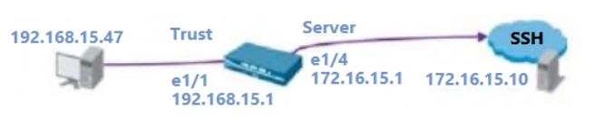
Question 408. What is the best definition of the Heartbeat Interval?
Question 409. A QoS profile is configured as shown in the image. The following throughput is realized:
Class 3 traffic 325Mbps -
Class 5 traffic 470Mbps -
Class 7 traffic: 330Mbps -
What happens as a result?
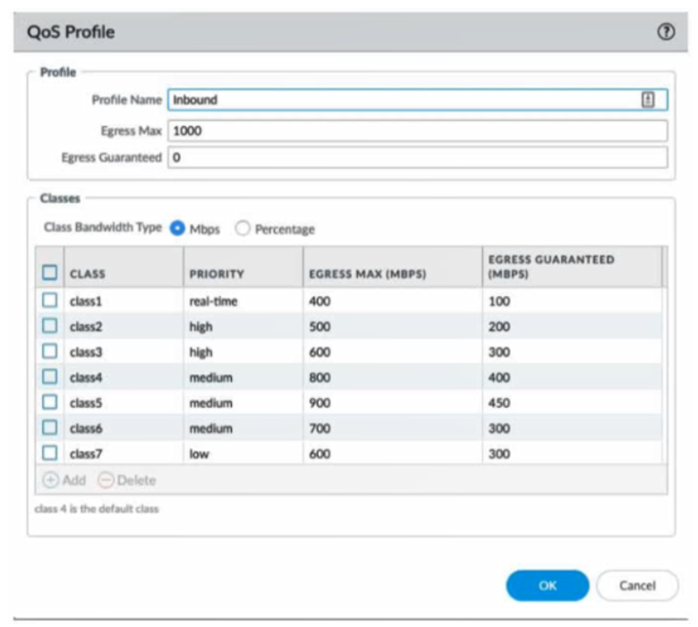
Question 410. Which three options does Panorama offer for deploying dynamic updates to its managed devices?
(Choose three.)
Question 411. A network security engineer configured IP multicast in the virtual router to support a new application. Users in different network segments are
reporting that they are unable to access the application.
What must be enabled to allow an interface to forward multicast traffic?
Question 412. Review the screenshots and consider the following information:
• FW-1 is assigned to the FW-1_DG device group and FW-2 is assigned to OFFICE_FW_DG
• There are no objects configured in REGIONAL_DG and OFFICE_FW_DG device groups
Which IP address will be pushed to the firewalls inside Address Object Server-1?
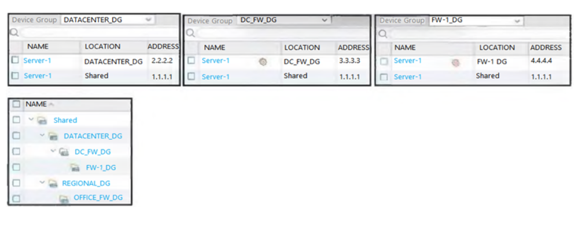
Question 413. Given the Sample Log Forwarding Profile shown, which two statements are true?
(Choose two.)
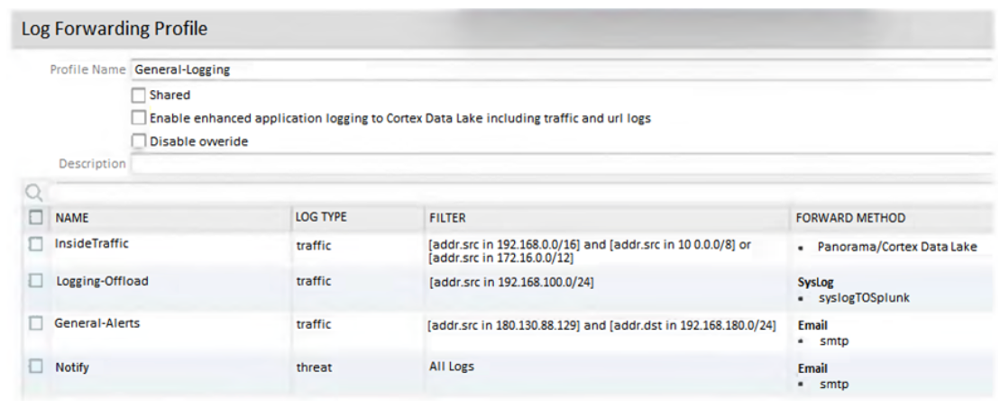
Question 414. Which benefit do policy rule UUIDs provide?
Question 415. A system administrator runs a port scan using the company tool as part of vulnerability check. The administrator finds that the scan is identified
as a threat and is dropped by the firewall. After further investigating the logs the administrator finds that the scan is dropped in the Threat Logs.
What should the administrator do to allow the tool to scan through the firewall?
Question 416. A customer wants to combine multiple Ethernet interfaces into a single virtual interface using link aggregation.
What is the valid naming convention for aggregate interfaces?
Question 417. A company with already deployed Palo Alto firewalls has purchased their first Panorama server. The security team has already configured all
firewalls with the Panorama IP address and added all the firewall serial numbers in Panorama.
What are the next steps to migrate configuration from the firewalls to Panorama?
Question 418. Based on the screenshots above, and with no configuration inside the Template Stack itself, what access will the device permit on its
Management port?
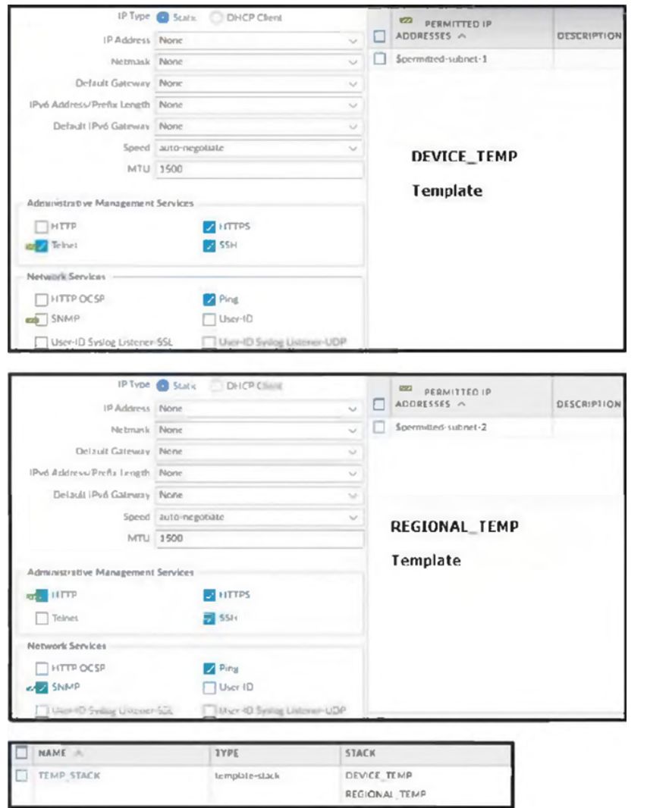
Question 419. View the screenshots. A QoS profile and policy rules are configured as shown.
Based on this information, which two statements are correct?
(Choose two.)
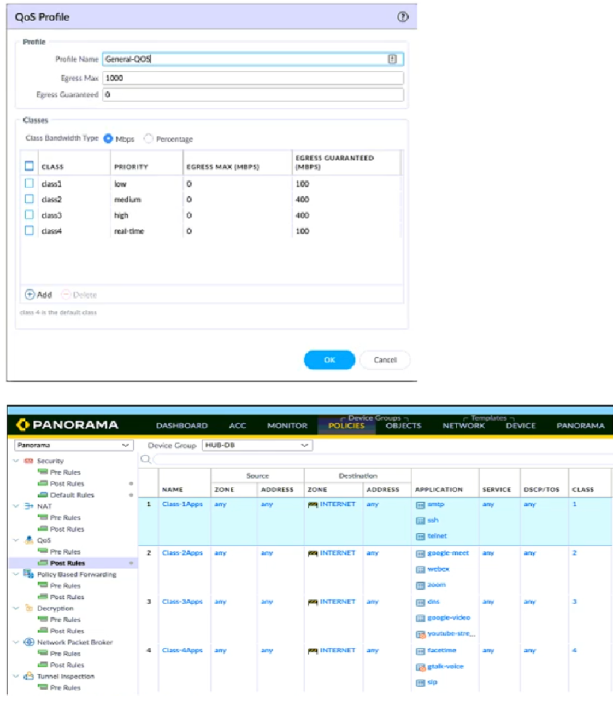
Question 420. An engineer is attempting to resolve an issue with slow traffic.
Which PAN-OS feature can be used to prioritize certain network traffic?
Question 421. An auditor is evaluating the configuration of Panorama and notices a discrepancy between the Panorama template and the local firewall
configuration.
When overriding the firewall configuration pushed from Panorama, what should you consider?
Question 422. What happens, by default, when the GlobalProtect app fails to establish an IPSec tunnel to the GlobalProtect gateway?
Question 423. Review the images. A firewall policy that permits web traffic includes the global-logs policy as depicted.
What is the result of traffic that matches the “Alert -Threats” Profile Match List?
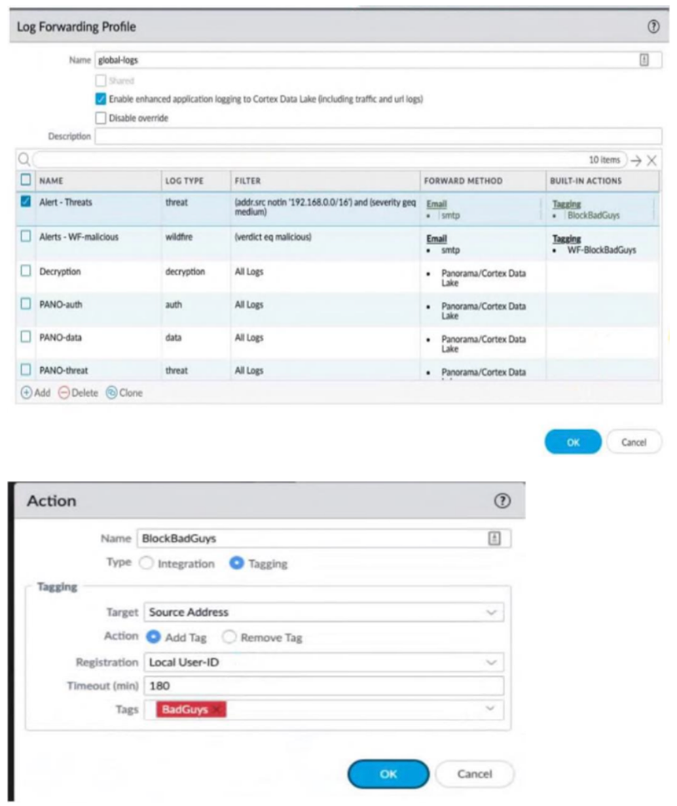
Question 424. An engineer troubleshooting a VPN issue needs to manually initiate a VPN tunnel from the CLI.
Which CLI command can the engineer use?
Question 425. What is the dependency for users to access services that require authentication?
Question 426. An engineer is designing a deployment of multi-vsys firewalls.
What must be taken into consideration when designing the device group structure?
Question 427. An engineer needs to collect User-ID mappings from the company’s existing proxies.
What two methods can be used to pull this data from third party proxies?
(Choose two.)
Question 428. An engineer needs to configure SSL Forward Proxy to decrypt traffic on a PA-5260. The engineer uses a forward trust certificate from the
enterprise PKI that expires December 31, 2025.
The validity date on the PA-generated certificate is taken from what?
Question 429. A network administrator is troubleshooting an issue with Phase 2 of an IPSec VPN tunnel. The administrator determines that the lifetime needs to
be changed to match the peer.
Where should this change be made?
Question 430. Which statement about High Availability timer settings is true?
Question 431. A firewall administrator is trying to identify active routes learned via BGP in the virtual router runtime stats within the GUI.
Where can they find this information?
Question 432. An engineer decides to use Panorama to upgrade devices to PAN-OS 10.2.
Which three platforms support PAN-OS 10.2?
(Choose three.)
Question 433. As a best practice, logging at session start should be used in which case?
Question 434. What must be configured to apply tags automatically to User-ID logs?
Question 435. The profile is configured to provide granular defense against targeted flood attacks for specific critical systems that are accessed by users from
the internet.
Which profile is the engineer configuring?
Question 436. Which states will a pair of firewalls be in if their HA Group ID is mismatched?
Question 437. An engineer troubleshooting a site-to-site VPN finds a Security policy dropping the peer’s IKE traffic at the edge firewall. Both VPN peers are
behind a NAT, and NAT-T is enabled.
How can the engineer remediate this issue?
Question 438. An administrator wants to grant read-only access to all firewall settings, except administrator accounts, to a new-hire colleague in the IT
department.
Which dynamic role does the administrator assign to the new-hire colleague?
Question 439. An engineer has been given approval to upgrade their environment to PAN-OS 10.2.
The environment consists of both physical and virtual firewalls, a virtual Panorama HA pair, and virtual log collectors.
What is the recommended order when upgrading to PAN-OS 10.2?
Question 440. Review the screenshot of the Certificates page.
An administrator for a small LLC has created a series of certificates as shown, to use for a planned Decryption roll out. The administrator has also
installed the self-signed root certificate in all client systems.
When testing, they noticed that every time a user visited an SSL site, they received unsecured website warnings.
What is the cause of the unsecured website warnings?
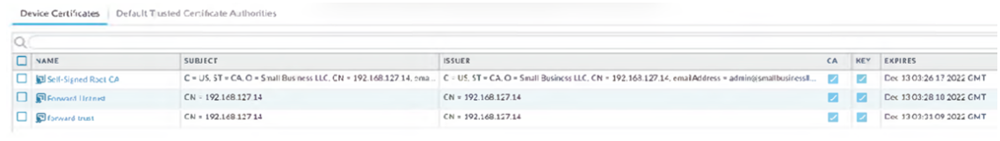
Question 441. An engineer is tasked with deploying SSL Forward Proxy decryption for their organization.
What should they review with their leadership before implementation?
Question 442. Four configuration choices are listed, and each could be used to block access to a specific URL.
If you configured each choice to block the same URL, then which choice would be evaluated last in the processing order to block access to the
URL?
Question 443. A network security engineer needs to enable Zone Protection in an environment that makes use of Cisco TrustSec Layer 2 protections.
What should the engineer configure within a Zone Protection profile to ensure that the TrustSec packets are identified and actions are taken upon
them?
Question 444. How should an administrator enable the Advance Routing Engine on a Palo Alto Networks firewall?
Question 445. An administrator wants to enable Palo Alto Networks cloud services for Device Telemetry and IoT.
Which type of certificate must be installed?
Question 446. Which Palo Alto Networks tool provides configuration heat map displays for security controls?
Question 447. An engineer is configuring SSL Inbound Inspection for public access to a company’s application.
Which certificate(s) need to be installed on the firewall to ensure that inspection is performed successfully?
Question 448. A network security administrator wants to begin inspecting bulk user HTTPS traffic flows egressing out of the internet edge firewall.
Which certificate is the best choice to configure as an SSL Forward Trust certificate?
Question 449. A company has configured a URL Filtering profile with override action on their firewall.
Which two profiles are needed to complete the configuration?
(Choose two.)
Question 450. Which three authentication types can be used to authenticate users?
(Choose three.)
Question 451. Which feature checks Panorama connectivity status after a commit?
Question 452. What are two explanations for this type of issue?
(Choose two.)
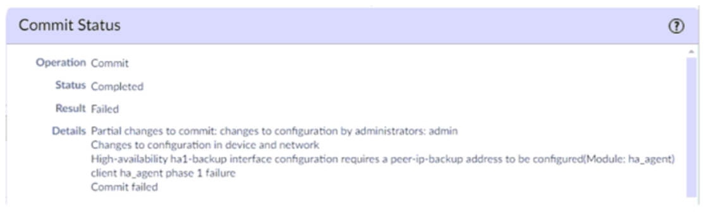
Question 453. A network administrator wants to deploy SSL Forward Proxy decryption. What two attributes should a forward trust certificate have? (Choose
two.)
Question 454. An administrator is assisting a security engineering team with a decryption rollout for inbound and forward proxy traffic. Incorrect firewall sizing is
preventing the team from decrypting all of the traffic they want to decrypt.
Which three items should be prioritized for decryption?
(Choose three.)
Question 455. During a laptop-replacement project, remote users must be able to establish a GlobalProtect VPN connection to the corporate network before
logging in to their new Windows 10 endpoints.
The new laptops have the 5.2.10 GlobalProtect Agent installed, so the administrator chooses to use the Connect Before Logon feature to solve
this issue.
What must be configured to enable the Connect Before Logon feature?
Question 456. Using the above screenshot of the ACC, what is the best method to set a global filter, narrow down Blocked User Activity, and locate the user(s)
that could be compromised by a botnet?
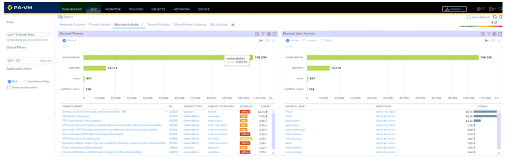
Question 457. What is the best description of the Cluster Synchronization Timeout (min)?
Question 458. Which two policy components are required to block traffic in real time using a dynamic user group (DUG)?
(Choose two.)
Question 459. An administrator is receiving complaints about application performance degradation. After checking the ACC, the administrator observes that
there is an excessive amount of SSL traffic.
Which three elements should the administrator configure to address this issue?
(Choose three.)
Question 460. An administrator creates a custom application containing Layer 7 signatures. The latest application and threat dynamic update is downloaded to
the same firewall. The update contains an application that matches the same traffic signatures as the custom application.
Which application will be used to identify traffic traversing the firewall?
Question 461. An administrator creates an application-based security policy rule and commits the change to the firewall.
Which two methods should be used to identify the dependent applications for the respective rule?
(Choose two.)
Question 462. An engineer is creating a template and wants to use variables to standardize the configuration across a large number of devices.
Which two variable types can be defined?
(Choose two.)
Question 463. Users have reported an issue when they are trying to access a server on your network. The requests aren't taking the expected route. You discover
that there are two different static routes on the firewall for the server.
What is used to determine which route has priority?
Question 464. A company has configured GlobalProtect to allow their users to work from home. A decrease in performance for remote workers has been
reported during peak-use hours.
Which two steps are likely to mitigate the issue?
(Choose two.)
Question 465. Which log type would provide information about traffic blocked by a Zone Protection profile?
Question 466. Where can an administrator see both the management-plane and data-plane CPU utilization in the WebUI?
Question 467. An administrator wants to perform HIP checks on the endpoints to ensure their security posture.
Which license is required on all Palo Alto Networks next-generation firewalls that will be performing the HIP checks?
Question 468. A network security administrator wants to configure SSL inbound inspection.
Which three components are necessary for inspecting the HTTPS traffic as it enters the firewall?
(Choose three.)
Question 469. You have been asked to implement GlobalProtect for your organization. You have decided on https://gp.mycompany.com for your Portal, and have
received the certificate and key.
Where would you navigate to on the firewall UI to import the certificate?
Question 470. An engineer has been asked to limit which routes are shared by running two different areas within an OSPF implementation. However, the devices
share a common link for communication.
Which virtual router configuration supports running multiple instances of the OSPF protocol over a single link?
Question 471. An administrator is configuring a Panorama device group.
Which two objects are configurable?
(Choose two.)
Question 472. An administrator wants to use LDAP, TACACS+, and Kerberos as external authentication services for authenticating users.
What should the administrator be aware of regarding the authentication sequence, based on the Authentication profiles in the order Kerberos,
LDAP, and TACACS+?
Question 473. An administrator has two pairs of firewalls within the same subnet. Both pairs of firewalls have been configured to use High Availability mode with
Active/Passive. The ARP tables for upstream routes display the same MAC address being shared for some of these firewalls.
What can be configured on one pair of firewalls to modify the MAC addresses so they are no longer in conflict?
Question 474. The same route appears in the routing table three times using three different protocols.
Which mechanism determines how the firewall chooses which route to use?
Question 475. An engineer has discovered that certain real-time traffic is being treated as best effort due to it exceeding defined bandwidth.
Which QoS setting should the engineer adjust?
Question 476. A Security policy rule is configured with a Vulnerability Protection Profile and an action of “Deny”.
Which action will this configuration cause on the matched traffic?
Question 477. Which feature detects the submission of corporate login information into website forms?
Question 478. Which three firewall multi-factor authentication factors are supported by PAN-OS?
(Choose three.)
Question 479. An administrator needs to identify which NAT policy is being used for internet traffic.
From the GUI of the firewall, how can the administrator identify which NAT policy is in use for a traffic flow?
Question 480. Which three external services perform both authentication and authorization for administration of firewalls?
(Choose three.)
Question 481. A firewall administrator has been tasked with ensuring that all firewalls forward System logs to Panorama.
In which section is this configured?
Question 482. A customer would like to support Apple Bonjour in their environment for ease of configuration.
Which type of interface in needed on their PA-3200 Series firewall to enable Bonjour Reflector in a segmented network?
Question 483. An engineer is bootstrapping a VM-Series Firewall. Other than the /config folder, which three directories are mandatory as part of the bootstrap
package directory structure?
(Choose three.)
Question 484. A company requires the firewall to block expired certificates issued by internet-hosted websites. The company plans to implement decryption in
the future, but it does not perform SSL Forward Proxy decryption at this time.
Without the use of SSL Forward Proxy decryption, how is the firewall still able to identify and block expired certificates issued by internet-hosted
websites?
Question 485. A company is looking to increase redundancy in their network.
Which interface type could help accomplish this?
Question 486. An auditor has requested that roles and responsibilities be split inside the security team. Group A will manage templates, and Group B will
manage device groups inside Panorama.
Which two specific firewall configurations will Group B manage?
(Choose two.)
Question 487. An engineer is deploying VoIP and needs to ensure that voice traffic is treated with the highest priority on the network.
Which QoS priority should be assigned to such an application?
Question 488. A network security administrator wants to enable Packet-Based Attack Protection in a Zone Protection profile.
What are two valid ways to enable Packet-Based Attack Protection?
(Choose two.)
Question 489. Given the following snippet of a WildFire submission log, did the end-user get access to the requested information and why or why not?
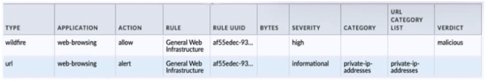
Question 490. The decision to upgrade to PAN-OS 10.2 has been approved. The engineer begins the process by upgrading the Panorama servers, but gets an
error when trying to install.
When performing an upgrade on Panorama to PAN-OS 10.2, what is the potential cause of a failed install?
Question 491. How can Panorama help with troubleshooting problems such as high CPU or resource exhaustion on a managed firewall?
Question 492. An administrator is configuring SSL decryption and needs to ensure that all certificates for both SSL Inbound inspection and SSL Forward Proxy
are installed properly on the firewall.
When certificates are being imported to the firewall for these purposes, which three certificates require a private key?
(Choose three.)
Question 493. An administrator would like to determine which action the firewall will take for a specific CVE.
Given the screenshot below, where should the administrator navigate to view this information?
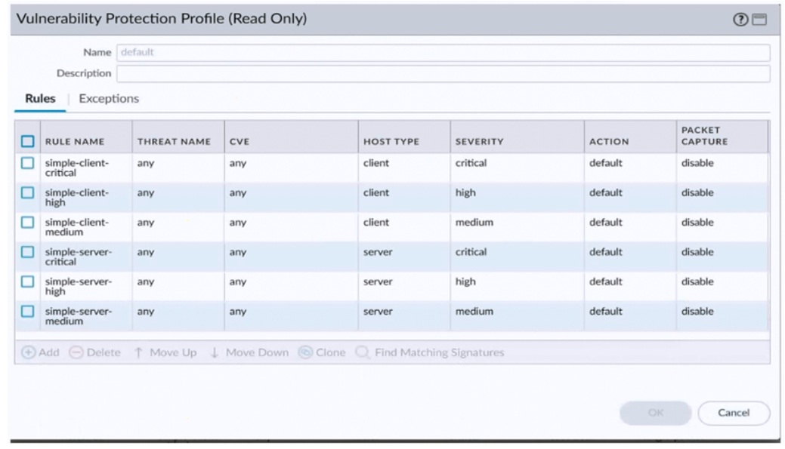
Question 494. An administrator has configured OSPF with Advanced Routing enabled on a Palo Alto Networks firewall running PAN-OS 10.2. After OSPF was
configured the administrator noticed that OSPF routes were not being learned.
Which two actions could an administrator take to troubleshoot this issue?
(Choose two.)
Question 495. In an HA failover scenario what happens with sessions decrypted by a SSL Forward Proxy Decryption policy?
Question 496. An administrator just enabled HA Heartbeat Backup on two devices. However, the status on the firewall's dashboard is showing as down.
What could an administrator do to troubleshoot the issue?
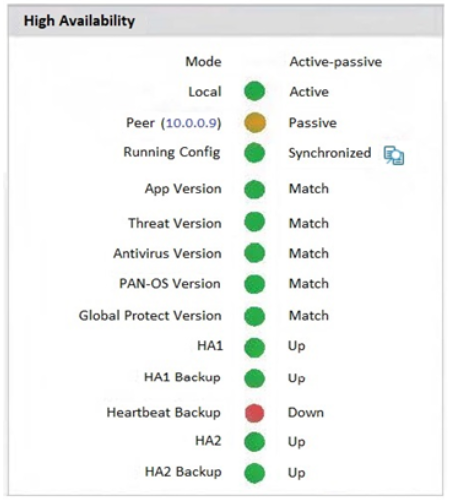
Question 497. An engineer troubleshoots an issue that causes packet drops.
Which command should the engineer run in the CLI to see if packet buffer protection is enabled and activated?
Question 498. An engineer configures SSL decryption in order to have more visibility to the internal users’ traffic when it is egressing the firewall.
Which three types of interfaces support SSL Forward Proxy?
(Choose three.)
Question 499. If an administrator wants to apply QoS to traffic based on source, what must be specified in a QoS policy rule?
Question 500. An engineer reviews high availability (HA) settings to understand a recent HA failover event. Review the screenshot below.
Which timer determines how long the passive firewall will wait before taking over as the active firewall after losing communications with the HA
peer?
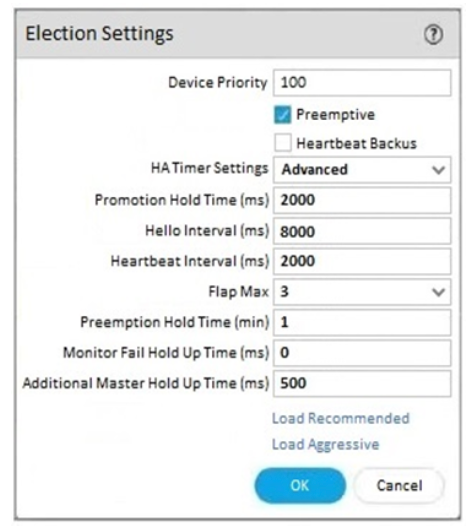
Question 501. A firewall engineer creates a destination static NAT rule to allow traffic from the internet to a webserver hosted behind the edge firewall. The preNAT IP address of the server is 153.6.12.10, and the post-NAT IP address is 192.168.10.10. Refer to the routing and interfaces information below.
What should the NAT rule destination zone be set to?
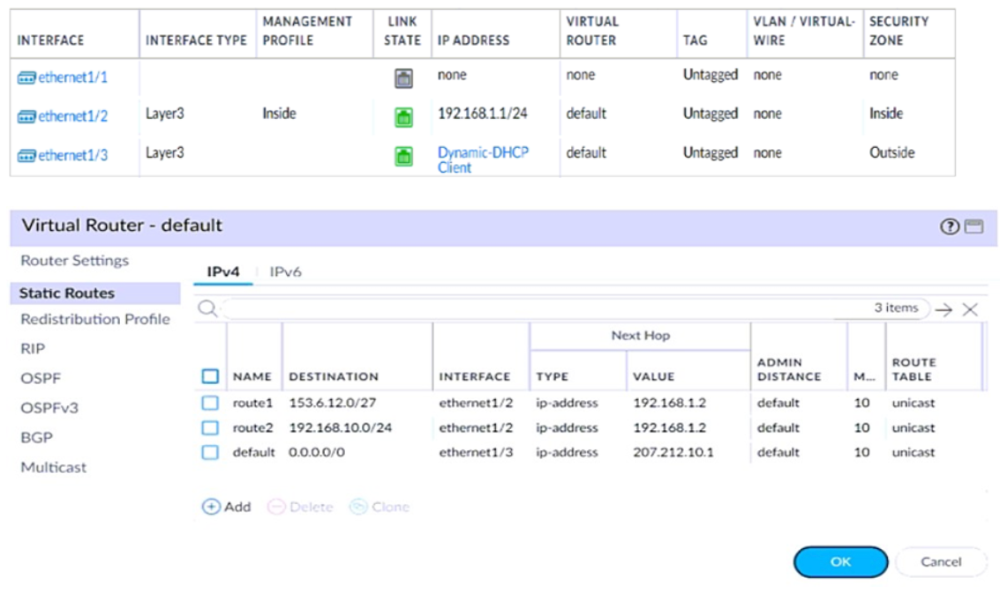
Question 502. A consultant deploys a PAN-OS 11.0 VM-Series firewall with the Web Proxy feature in Transparent Proxy mode.
Which three elements must be in place before a transparent web proxy can function?
(Choose three.)
Question 503. Which source is the most reliable for collecting User-ID user mapping?
Question 504. Which type of zone will allow different virtual systems to communicate with each other?
Question 505. An organization is interested in migrating from their existing web proxy architecture to the Web Proxy feature of their PAN-OS 11.0 firewalls.
Currently, HTTP and SSL requests contain the destination IP address of the web server and the client browser is redirected to the proxy.
Which PAN-OS proxy method should be configured to maintain this type of traffic flow?
Question 506. An engineer discovers the management interface is not routable to the User-ID agent.
What configuration is needed to allow the firewall to communicate to the User-ID agent?
Question 507. An engineer receives reports from users that applications are not working and that websites are only partially loading in an asymmetric
environment. After investigating, the engineer observes the flow_tcp_non_syn_drop counter increasing in the show counters global output.
Which troubleshooting command should the engineer use to work around this issue?
Question 508. Where is Palo Alto Networks Device Telemetry data stored on a firewall with a device certificate installed?
Question 509. Which GlobalProtect gateway setting is required to enable split-tunneling by access route, destination domain, and application?
Question 510. A superuser is tasked with creating administrator accounts for three contractors. For compliance purposes, all three contractors will be working
with different device-groups in their hierarchy to deploy policies and objects.
Which type of role-based access is most appropriate for this project?
Question 511. An administrator connects four new remote offices to the corporate data center. The administrator decides to use the Large Scale VPN (LSVPN)
feature on the Palo Alto Networks next-generation firewall.
What should the administrator configure in order to connect the sites?
Question 512. A customer wants to set up a site-to-site VPN using tunnel interfaces.
What format is the correct naming convention for tunnel interfaces?
Question 513. An engineer notices that the tunnel monitoring has been failing for a day and the VPN should have failed over to a backup path.
What part of the network profile configuration should the engineer verify?
Question 514. Which three multi-factor authentication methods can be used to authenticate access to the firewall?
(Choose three.)
Question 515. Which two profiles should be configured when sharing tags from threat logs with a remote User-ID agent?
(Choose two.)
Question 516. What is the PAN-OS NPTv6 feature based on RFC 6296 used for?
Question 517. An administrator has been tasked with deploying SSL Forward Proxy.
Which two types of certificates are used to decrypt the traffic?
(Choose two.)
Question 518. An engineer is deploying multiple firewalls with common configuration in Panorama.
What are two benefits of using nested device groups?
(Choose two.)
Question 519. A network security administrator wants to inspect HTTPS traffic from users as it egresses through a firewall to the Internet/Untrust zone from
trusted network zones. The security admin wishes to ensure that if users are presented with invalid or untrusted security certificates, the user will
see an untrusted certificate warning.
What is the best choice for an SSL Forward Untrust certificate?
Question 520. After implementing a new NGFW, a firewall engineer sees a VoIP traffic issue going through the firewall. After troubleshooting, the engineer finds
that the firewall performs NAT on the voice packets payload and opens dynamic pinholes for media ports.
What can the engineer do to solve the VoIP traffic issue?
Question 521. After importing a pre-configured firewall configuration to Panorama, what step is required to ensure a commit/push is successful without
duplicating local configurations?
Question 522. Which new PAN-OS 11.0 feature supports IPv6 traffic?
Question 523. If a URL is in multiple custom URL categories with different actions, which action will take priority?
Question 524. An engineer is reviewing the following high availability (HA) settings to understand a recent HA failover event.
Which timer determines the frequency between packets sent to verify that the HA functionality on the other HA firewall is operational?
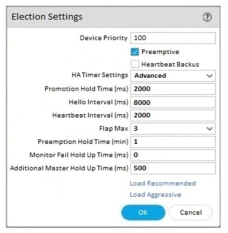
Question 525. Which three items must be configured to implement application override?
(Choose three.)
Question 526. An engineer is configuring a firewall with three interfaces:
• MGT connects to a switch with internet access.
• Ethernet1/1 connects to an edge router.
• Ethernet1/2 connects to a virtualization network.
The engineer needs to configure dynamic updates to use a dataplane interface for internet traffic.
What should be configured in Setup > Services > Service Route Configuration to allow this traffic?
Question 527. An organization conducts research on the benefits of leveraging the Web Proxy feature of PAN-OS 11.0.
What are two benefits of using an explicit proxy method versus a transparent proxy method?
(Choose two.)
Question 528. Which three external authentication services can the firewall use to authenticate admins into the Palo Alto Networks NGFW without creating
administrator account on the local firewall?
(Choose three.)
Question 529. With the default TCP and UDP settings on the firewall, what will be the identified application in the following session?
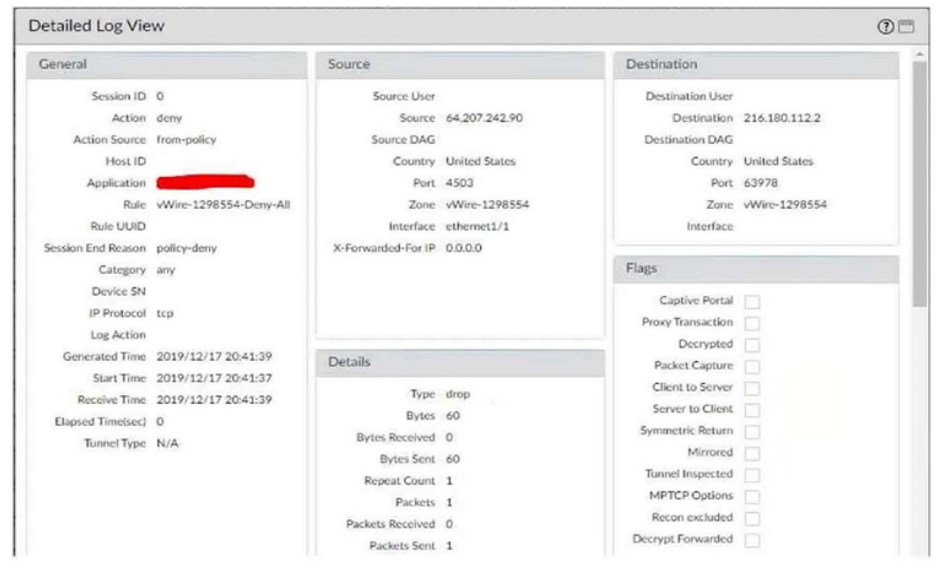
Question 530. To ensure that a Security policy has the highest priority, how should an administrator configure a Security policy in the device group hierarchy?
Question 531. Based on the graphic, which statement accurately describes the output shown in the Server Monitoring panel?
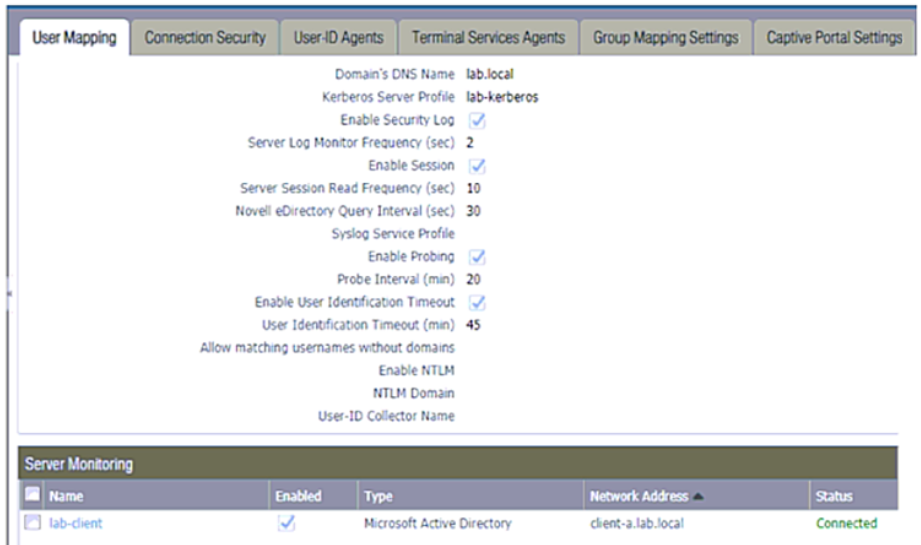
Question 532. What can be used as an Action when creating a Policy-Based Forwarding (PBF) policy?
Question 533. An engineer manages a high availability network and requires fast failover of the routing protocols. The engineer decides to implement BFD.
Which three dynamic routing protocols support BFD?
(Choose three.)
Question 534. A company has recently migrated their branch office’s PA-220s to a centralized Panorama. This Panorama manages a number of PA-7000 Series
and PA-5200 Series devices. All device group and template configuration is managed solely within Panorama.
They notice that commit times have drastically increased for the PA-220s after the migration.
What can they do to reduce commit times?
Question 535. An administrator is troubleshooting why video traffic is not being properly classified.
If this traffic does not match any QoS classes, what default class is assigned?
Question 536. An administrator notices that an interface configuration has been overridden locally on a firewall. They require all configuration to be managed
from Panorama and overrides are not allowed.
What is one way the administrator can meet this requirement?
Question 537. Where can a service route be configured for a specific destination IP?
Question 538. Phase two of a VPN will not establish a connection. The peer is using a policy-based VPN configuration.
What part of the configuration should the engineer verify?
Question 539. Information Security is enforcing group-based policies by using security-event monitoring on Windows User-ID agents for IP-to-User mapping in
the network. During the rollout, Information Security identified a gap for users authenticating to their VPN and wireless networks.
Root cause analysis showed that users were authenticating via RADIUS and that authentication events were not captured on the domain
controllers that were being monitored. Information Security found that authentication events existed on the Identity Management solution (IDM).
There did not appear to be direct integration between PAN-OS and the IDM solution.
How can Information Security extract and learn IP-to-user mapping information from authentication events for VPN and wireless users?
Question 540. An administrator troubleshoots an issue that causes packet drops.
Which log type will help the engineer verify whether packet buffer protection was activated?
Question 541. An engineer creates a set of rules in a Device Group (Panorama) to permit traffic to various services for a specific LDAP user group.
What needs to be configured to ensure Panorama can retrieve user and group information for use in these rules?
Question 542. Review the information below. A firewall engineer creates a U-NAT rule to allow users in the trust zone access to a server in the same zone by
using an external, public NAT IP for that server.
Given the rule below, what change should be made to make sure the NAT works as expected?
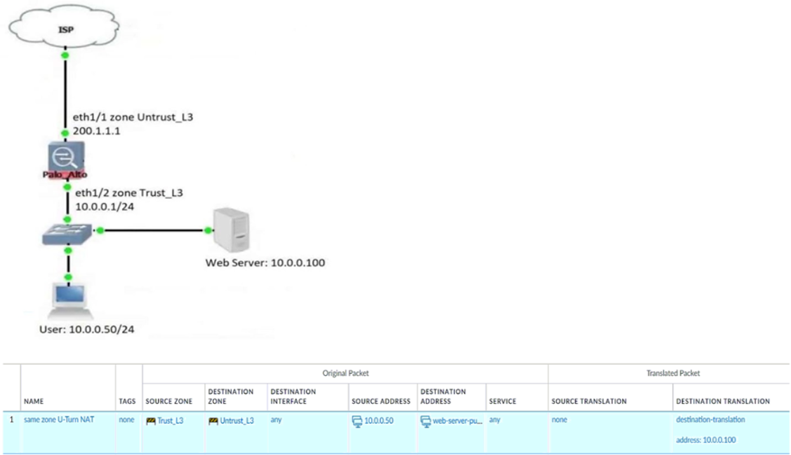
Question 543. An engineer is configuring a template in Panorama which will contain settings that need to be applied to all firewalls in production.
Which three parts of a template an engineer can configure?
(Choose three.)
Question 544. A firewall engineer reviews the PAN-OS GlobalProtect application and sees that it implicitly uses web-browsing and depends on SSL.
When creating a new rule, what is needed to allow the application to resolve dependencies?
Question 545. In a security-first network, what is the recommended threshold value for apps and threats to be dynamically updated?
Question 546. An engineer configures a specific service route in an environment with multiple virtual systems instead of using the inherited global service route
configuration.
What type of service route can be used for this configuration?
Question 547. An administrator is receiving complaints about application performance degradation. After checking the ACC, the administrator observes that
there is an excessive amount of VoIP traffic.
Which three elements should the administrator configure to address this issue?
(Choose three.)
Question 548. What are three tasks that cannot be configured from Panorama by using a template stack?
(Choose three.)
Question 549. Based on the screenshots above, what is the correct order in which the various rules are deployed to firewalls inside the DATACENTER_DG device
group?
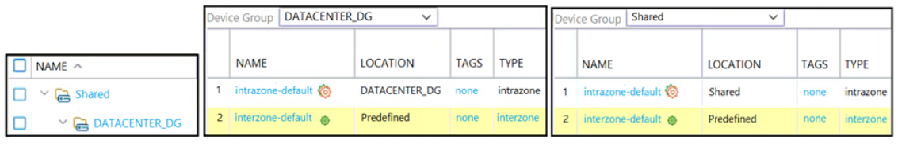
Question 550. A company wants to implement threat prevention to take action without redesigning the network routing.
What are two best practice deployment modes for the firewall?
(Choose two.)
Question 551. Which operation will impact the performance of the management plane?
Question 552. Which type of policy in Palo Alto Networks firewalls can use Device-ID as a match condition?
Question 553. Why would a traffic log list an application as "not-applicable"?
Question 554. What must be configured to apply tags automatically based on User-ID logs?
Question 555. A firewall engineer creates a NAT rule to translate IP address 1.1.1.10 to 192.168.1.10. The engineer also plans to enable DNS rewrite so that the
firewall rewrites the IPv4 address in a DNS response based on the original destination IP address and translated destination IP address configured
for the rule. The engineer wants the firewall to rewrite a DNS response of 1.1.1.10 to 192.168.1.10.
What should the engineer do to complete the configuration?
Question 556. An engineer is monitoring an active/active high availability (HA) firewall pair.
Which HA firewall state describes the firewall that is experiencing a failure of a monitored path?
Question 557. You are auditing the work of a co-worker and need to verify that they have matched the Palo Alto Networks Best Practices for Anti-Spyware
Profiles.
For which three severity levels should single-packet captures be enabled to meet the Best Practice standard?
(Choose three.)
Question 558. In the New App Viewer under Policy Optimizer, what does the compare option for a specific rule allow an administrator to compare?
Question 559. Given the following snippet of a WildFire submission log, did the end user successfully download a file?
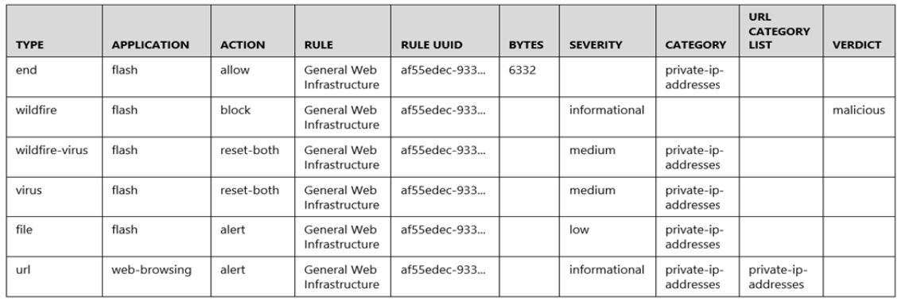
Question 560. Which two factors should be considered when sizing a decryption firewall deployment?
(Choose two.)
Question 561. After switching to a different WAN connection, users have reported that various websites will not load, and timeouts are occurring. The web
servers work fine from other locations.
The firewall engineer discovers that some return traffic from these web servers is not reaching the users behind the firewall. The engineer later
concludes that the maximum transmission unit (MTU) on an upstream router interface is set to 1400 bytes.
The engineer reviews the following CLI output for ethernet1/1.
Which setting should be modified on ethernet1/1 to remedy this problem?
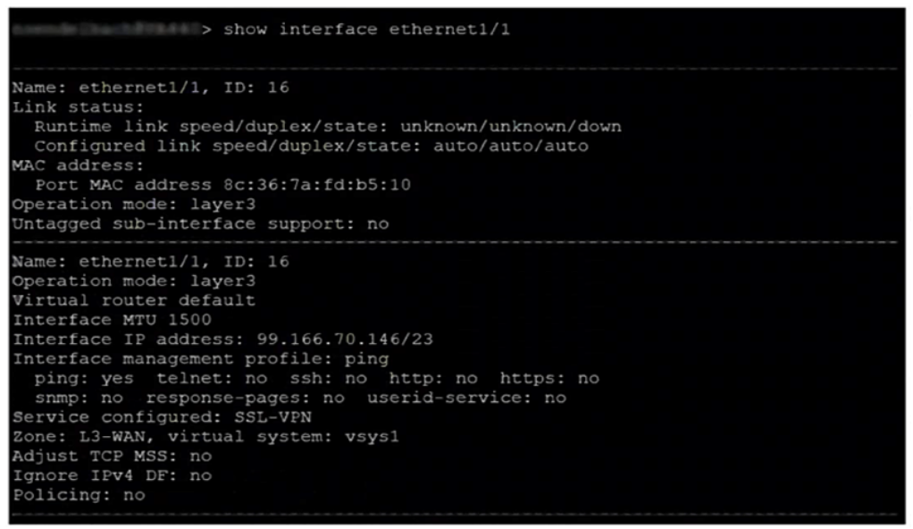
Question 562. An engineer configures a new template stack for a firewall that needs to be deployed. The template stack should consist of four templates
arranged according to the diagram.
Which template values will be configured on the firewall if each template has an SSL/TLS Service profile configured named Management?
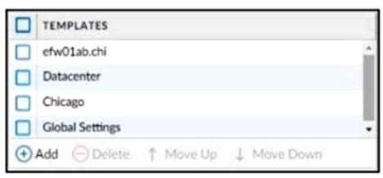
Question 563. An administrator configures two VPN tunnels to provide for failover and uninterrupted VPN service.
What should an administrator configure to enable automatic failover to the backup tunnel?
Question 564. An administrator configures a site-to-site IPsec VPN tunnel between a PA-850 and an external customer on their policy-based VPN devices.
What should an administrator configure to route interesting traffic through the VPN tunnel?
Question 565. A firewall engineer creates a new App-ID report under Monitor > Reports > Application Reports > New Applications to monitor new applications on
the network and better assess any Security policy updates the engineer might want to make.
How does the firewall identify the New App-ID characteristic?
Question 566. An engineer is monitoring an active/active high availability (HA) firewall pair.
Which HA firewall state describes the firewall that is currently processing traffic?
Question 567. An engineer needs to configure a standardized template for all Panorama-managed firewalls. These settings will be configured on a template
named "Global" and will be included in all template stacks.
Which three settings can be configured in this template?
(Choose three.)
Question 568. An organization wants to begin decrypting guest and BYOD traffic.
Which NGFW feature can be used to identify guests and BYOD users, instruct them how to download and install the CA certificate, and clearly
notify them that their traffic will be decrypted?
Question 569. Which two key exchange algorithms consume the most resources when decrypting SSL traffic?
(Choose two.)
Question 570. An engineer troubleshoots a Panorama-managed firewall that is unable to reach the DNS servers configured via a global template. As a
troubleshooting step, the engineer needs to configure a local DNS server in place of the template value.
Which two actions can be taken to ensure that only the specific firewall is affected during this process?
(Choose two.)
Question 571. An engineer troubleshoots a high availability (HA) link that is unreliable.
Where can the engineer view what time the interface went down?
Question 572. A consultant advises a client on designing an explicit Web Proxy deployment on PAN-OS 11.0. The client currently uses RADIUS authentication in
their environment.
Which two pieces of information should the consultant provide regarding Web Proxy authentication?
(Choose two.)
Question 573. A customer wants to deploy User-ID on a Palo Alto Networks NGFW with multiple vsys. One of the vsys will support a GlobalProtect portal and
gateway. The customer uses Windows Active Directory for authentication.
What is the most operationally efficient way to redistribute the most accurate IP addresses to username mappings?
Question 574. A security engineer wants to upgrade the company's deployed firewalls from PAN-OS 10.1 to 11.0.x to take advantage of the newTLSv1.3 support
for management access.
What is the recommended upgrade path procedure from PAN-OS 10.1 to 11.0.x?
Question 575. Which two actions must an engineer take to configure SSL Forward Proxy decryption?
(Choose two.)
A firewall engineer supports a mission-critical network that has zero tolerance for application downtime. A best-practice action taken by the
engineer is to configure an Applications and Threats update schedule with a new App-ID threshold of 48 hours.
Which two additional best-practice guideline actions should be taken with regard to dynamic updates?
(Choose two.)
When a new firewall joins a high availability (HA) cluster, the cluster members will synchronize all existing sessions over which HA port?
What can the Log Forwarding built-in action with tagging be used to accomplish?
An administrator notices interface ethernet1/2 failed on the active firewall in an active I passive firewall high availability(HA) pair.
Based on the image below, what - if any - action was taken by the active firewall when the link failed?
A firewall administrator wants to be able to see all NAT sessions that are going through a firewall with source NAT.
Which CLI command can the administrator use?
An engineer needs to configure a standardized template for all Panorama-managed firewalls. These settings will be configured on a template
named "Global" and will be included in all template stacks.
Which three settings can be configured in this template?
(Choose three.)
All firewalls at a company are currently forwarding logs to Palo Alto Networks log collectors. The company also wants to deploy a syslog server
and forward all firewall logs to the syslog server and to the log collectors. There is a known logging peak time during the day and the security
team has asked the firewall engineer to determine how many logs per second the current Palo Alto Networks log collectors are processing at that
particular time.
Which method is the most time-efficient to complete this task?
A firewall engineer is configuring quality of service (QoS) policy for the IP address of a specific server in an effort to limit the bandwidth
consumed by frequent downloads of large files from the internet.
Which combination of pre-NAT and/or post-NAT information should be used in the QoS rule?
The decision to upgrade PAN-OS has been approved. The engineer begins the process by upgrading the Panorama servers, but gets an error when
attempting the install.
When performing an upgrade on Panorama to PAN-OS, what is the potential cause of a failed install?
Following a review of firewall logs for traffic generated by malicious activity, how can an administrator confirm that WildFire has identified a virus?
A firewall engineer is managing a Palo Alto Networks NGFW which is not in line of any DHCP traffic.
Which interface mode can the engineer use to generate Enhanced Application logs (EALs) for classifying IoT devices while receiving broadcast
DHCP traffic?
An administrator is considering deploying WildFire globally.
What should the administrator consider with regards to the WildFire infrastructure?
Which log type is supported in the Log Forwarding profile?
A firewall engineer needs to update a company’s Panorama-managed firewalls to the latest version of PAN-OS. Strict security requirements are
blocking internet access to Panorama and to the firewalls. The PAN-OS images have previously been downloaded to a secure host on the network.
Which path should the engineer follow to deploy the PAN-OS images to the firewalls?
Which conditions must be met when provisioning a high availability (HA) cluster?
(Choose two.)
Why are external zones required to be configured on a Palo Alto Networks NGFW in an environment with multiple virtual systems?
Which two are required by IPSec in transport mode?
(Choose two.)
A firewall engineer needs to patch the company’s Palo Alto Networks firewalls to the latest version of PAN-OS. The company manages its firewalls
by using Panorama. Logs are forwarded to Dedicated Log Collectors, and file samples are forwarded to WildFire appliances for analysis.
What must the engineer consider when planning deployment?
Which rule type controls end user SSL traffic to external websites?
An internal audit team has requested additional information to be included inside traffic logs forwarded from Palo Alto Networks firewalls to an
internal syslog server.
Where can the firewall engineer define the data to be added into each forwarded log?
When you troubleshoot an SSL Decryption issue, which PAN-OS CLI command do you use to check the details of the Forward Trust certificate,
Forward Untrust certificate, and SSL Inbound Inspection certificate?
Which two items must be configured when implementing application override and allowing traffic through the firewall?
(Choose two.)
A firewall administrator is configuring an IPSec tunnel between Site A and Site B. The Site A firewall uses a DHCP assigned address on the outside
interface of the firewall, and the Site B firewall uses a static IP address assigned to the outside interface of the firewall. However, the use of
dynamic peering is not working.
Refer to the two sets of configuration settings provided. Which two changes will allow the configurations to work?
(Choose two.)
Site A configuration:
Site B configuration:
Which server platforms can be monitored when a company is deploying User-ID through server monitoring in an environment with diverse directory
services?
An engineer is monitoring an active/passive high availability (HA)
firewall pair.
Which HA firewall state describes the firewall that is currently processing traffic?
A root cause analysis investigation into a recent security incident reveals that several decryption rules have been disabled. The security team
wants to generate email alerts when decryption rules are changed.
How should email log forwarding be configured to achieve this goal?
An engineer has been given approval to upgrade their environment to the latest of PAN-OS.
The environment consists of both physical and virtual firewalls, a virtual Panorama HA pair, and virtual log collectors.
What is the recommended order of operational steps when upgrading?
An administrator has a Palo Alto Networks NGFW. All security subscriptions and decryption are enabled and the system is running close to its
resource limits.
Knowing that using decryption can be resource-intensive, how can the administrator reduce the load on the firewall?
A firewall engineer has determined that, in an application developed by the company’s internal team, sessions often remain idle for hours before
the client and server exchange any data. The application is also currently identified as unknown-tcp by the firewalls. It is determined that because
of a high level of trust, the application does not require to be scanned for threats, but it needs to be properly identified in Traffic logs for reporting
purposes.
Which solution will take the least time to implement and will ensure the App-ID engine is used to identify the application?
What happens when the log forwarding built-in action with tagging is used?
A firewall engineer creates a source NAT rule to allow the company’s internal private network 10.0.0.0/23 to access the internet. However, for
security reasons, one server in that subnet (10.0.0.10/32) should not be allowed to access the internet, and therefore should not be translated
with the NAT rule.
Which set of steps should the engineer take to accomplish this objective?